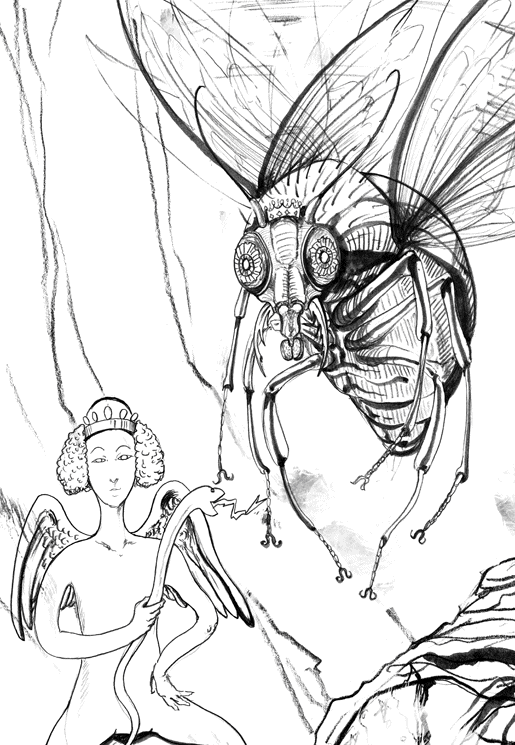

| AMON The Code of DEVIL Procedure | |
| 大竹康師 | |
| PHP研究所 (2011) | |

AMON（アモン）
The Code of DEVIL Procedure
竹安佐和記 企画・監修・イラスト
大竹康師 著
〈作画協力〉堀 壮太郎
〈装丁〉大橋 勉（株式会社ケイズ）
「旅にでも出てみたらどうだ？」
話は 唐 突 だった。母を亡くし、父とともに 葬 儀 に 忙 殺 され、その後の 雑 事 を終えてホッと一息ついた 頃 、父が突然 漏 らした一言だ。
ジョンはケンブリッジ大学で古典を学び、卒業後は父の別荘で 詩 作 に 耽 っている。世間の評価も得つつあったが、このまま詩作の道を 究 めるべきか、関心のある政治の世界に踏み込むべきか、まだまだ悩める二十九歳である。
家はかなり裕福で、ジョンが一年二年、旅暮らしをするくらいの財産的余裕もある。一人になった父も、メイドたちがいて生活に困ることはないだろう。
ただ――
「そんな、旅って言われても...... 」
思えば〈大学にでも行ってみたらどうだ？〉と言われて大学へ入り、〈この先、何をするかゆっくり考えてみたらどうだ？〉と言われて別荘にこもり、これまで何かにつけて、 寛 容 な父に甘えてきている。しかも幸い助言が裏目に出たことはない。
それでも今、父の別荘での自由気ままな生活に満足しているジョンにとって、特に行きたいところなどないというのが、 偽 りのない思いだった。
「考えてみるよ」
「そうだな。考えてみるがいい」
その 実 、ジョンはあまり真剣に考える気はなかった。
気がつくと、ジョンの足は芝居小屋に向かっていた。
詩作に行き詰まったときはもちろん、何かに悩んだり、むしゃくしゃしたときも、ジョンはたいてい芝居見物で気分転換する。母の死は冷静に受け止めているが、この日は日常に戻るきっかけとして芝居を見ることを思い立ったのだった。
行きつけの芝居小屋はいくつもあって、どの小屋の役者、作家、常連ともほとんど顔見知りである。しかし人見知りするジョンは、自分からは誰にも話しかけることがないし、話しかけられても深入りしない。ジョンにとって他人とは、ある意味《観察対象》でしかない。
その日、選んだのは、ロンドンでもそこそこ大きな芝居小屋である。
ジョンは元々、内容にあまり期待していなかったが、上演された新作は想像以上に退屈だった。 大 仰 な芝居をする主役、必要以上に暗いヒロイン、やる気のない 脇 役 、 破 綻 した台本。
それでも 時 折 、客席から笑いや拍手が起きると、
〈どれだけレベルの低い観客なんだろう？〉
と、ジョンは目を向けた。すると予想どおり、その客はいかにも芝居を見慣れていなさそうな 田舎 者 らしい 出 で 立 ちの年配者だったりする。いつもなら、このような雰囲気に耐えきれず中座するところだが、この日に限ってジョンは、なんとなくそんな気にもなれず、そのまま観劇を続けていた。
「フフッ...... 」
貴婦人らしい、しとやかな笑い声が、ふと場内に響いた。
〈ここは笑うところじゃないだろう〉
ジョンが 呆 れて、笑い声がした 桟 敷 を見上げたとき、 仮面 をつけた女性が立ち上がって横を向いた。スッと通った鼻筋と、白い 頬 が印象的な横顔だった。
〈初めて見る顔だな〉
女性は誰かと談笑しているらしく、時折、口元に手を当ててヒソヒソ話をするような 素 振 りを見せている。さっきの笑いも、その中で出た声かもしれないが、場内が薄暗いので、話し相手の顔はジョンからまったく見えない。
〈いや、どこかで見た気がする〉
ちゃんとした劇場ならいざ知らず、大きいだけが取り柄の、こんな 場 末 の芝居小屋で、仮面をつけて正装した《貴婦人》の姿はかなり目立ち、気にしだすと止まらない。ジョンの視線はすっかり芝居よりも、桟敷の《貴婦人》に釘付けになっていた。薄暗い桟敷に目を 凝 らすうちに、《貴婦人》の豊満なボディラインや、細くて長く、しなやかな指先の 輪 郭 も、おぼろげながら 掴 めてくる。
〈あの仮面を外してくれたら...... 〉
そんなジョンの望みとは裏腹に、《貴婦人》はヒソヒソ話に夢中で、まるで仮面のことなど気にしていない。話し相手が長身の男性であるらしいことはわかったが、ついに《貴婦人》の素顔はわからないまま、芝居は終演してしまった。
ジョンはどうしても《貴婦人》のことが気になって、追いかけたい衝動に駆られたが、混雑した芝居小屋から外へ出るのに時間がかかり、あえなく見失ってしまった。
〈あと少しで、思い出せそうだったのに〉
人々が忙しく足早に行き交う夕方の大通りで、必死に《貴婦人》の影を求めて辺りを見回してみても、それらしい姿はどこにも見当たらない――
まっすぐ帰るのが 癪 で、ジョンは明るいうちから酒場で 独 りグラスを傾けた。
元々、神経質というか、細かいことを気にしだすと止まらなくなる性格である。
〈これだけ考えて思い出せないのなら、やはり知らない女性だったんだろう〉
と、二杯飲んでようやく自分を納得させた頃には、あたりはすっかり暗くなっていた。
少し春の夜風にあたりながら帰ることにしたジョンは、そのままテムズ川の 川 縁 をあてどなく歩きだした。薄暗い脇道に 逸 れて、怪しげな店が並ぶ裏通りを抜けると、すぐそこにウェストミンスター宮殿がある。
そこだけ 松 明 に 皓 々 と照らされる城門の付近には、明かりに群がる虫のように、労働者やら商人やら、いろいろな階層の人々が行き交っていた。さらに城門から遠ざかると、夜の女や、怪しげな物売り、小さな屋台なども並んでいる。
〈こんなところに、 夜 市 が立っていたとは知らなかったな〉
好奇心 旺 盛 なジョンは、引き寄せられるようにフラッと、危ない匂いのする街外れへと足を踏み入れていた。
実際に近づいてみれば、どれも屋台というほど立派なものではなく、申し訳程度の屋根がついた粗末な造りで、暗すぎて何を売っているのかもわからない。ほとんどは食べ物を扱っているようだが、美食家ながら店構えだけを見て判断しないジョンでも耐え難い安っぽさがあふれている。
それでもジョンは、ふと足を止めた。
〈仮面？〉
一軒の屋台に、さっき芝居小屋で《貴婦人》が着けていたのと同じであろう仮面が並べられている。ジョンが思わず手に取ると、すかさず薄汚い身なりの老人がすり寄って、
「旦那、安くしとくよ」
などと 臭 い息で声を 掛 けてくる。
〈でも、よく見ると違うような...... 〉
もし同じだったとしても、ここにあの《貴婦人》がいるわけもなく、ジョンは急に気持ちが冷めるのを感じながら、仮面を置いて立ち去った。
そして次の瞬間、ジョンは《貴婦人》と、運命の再会を果たしたのである。
向き直ったジョンの視線の先で、《貴婦人》は小さなテーブルに向かって椅子に腰掛け、こちらを見ていた。目が合うと、《貴婦人》はにっこりジョンに 微 笑 んだが、まだこのとき、ジョンは彼女が《貴婦人》であることに気づいていなかった。それというのも、芝居小屋で見たときとは正反対で、大きな眼を 露 わに、口元をベールで隠していたのである。服もまたドレスでなく、 小 綺 麗 ではあったが、質素なものだった。
ジョンは、その女性が身なりからして《占い師》だろうと判断し、興味もなく素通りしようとした。
「あら、何も見えない」
女性はジョンに向かって聞こえよがしに、およそ占い師らしからぬことをつぶやいた。その天使のような清く高めの声が耳に残って、ジョンは思わず足を止めた。改めて女性をまじまじと見ると、女性も対抗するように、じっとジョンを見返している。
「どうして!? 」
女性はベールを外し、椅子から飛び上がるようにしてジョンに駆け寄ってきた。
白く 艶 やかな頬が露わになったが、このときもジョンはまだ彼女が《貴婦人》だと気づいていなかった。
「あなた名前は？」
「...... ジョン」
「誕生日は？」
「...... 十二月九日」
「射手座ね。何年生まれ？」
「一六〇八年」
「今年、三十ね」
ジョンが 呆 気 にとられているのをよそに、女性はジョンを質問攻めにした。慎重なジョンは、普段なら見知らぬ相手の質問になど素直に答えるはずがないのに、 脅 されて縮こまるようにすっかり女性のペースに乗せられて、 訊 かれたことに 逐 一 答えてしまっている。挙げ句、今一番、気にしている年齢のことを遠慮なく言い放たれても、怒るどころではなかった。
女性はなお食い入るようにジョンの眼をじっと見ている。
歳は自分よりひとまわり以上、若いだろうとジョンは思った。そして、
〈オッドアイ!? 〉
暗がりであるにもかかわらず、ジョンにははっきりと、女性の左眼が 翡 翠 、右眼が 瑠 璃 と、色違いであることが見て取れた。
そのとき、ジョンは打たれたようにハッと硬直していた――
ジョンは最近、 密 かな悩みを抱えている。
夜ごと 終 末 夢 にうなされて眠れないのだ。
その終末夢にはいろいろなパターンがあって、今まさに背後にそびえるウェストミンスター宮殿が崩壊する夢も見たし、ロンドン橋が落ちる夢など何度も見た。それどころかロンドン中に流れ星が降り注ぐ夢も見たし、おどろおどろしい《悪魔》も、いろんなタイプのものを見た。
しかし、すべて共通するエンディングで救われる――
降 臨 した 大 天 使 が、事態を 収 拾 するのである。とはいえジョンが大天使だと思っているだけで、その彼が、みずから夢の中で大天使と名乗ったことはない。そしてその大天使こそが、紛れもなく今、目の前にいる女性と同じ、左眼が翡翠、右眼が瑠璃のオッドアイなのである。
女性に見つめられている間、ジョンはずっと天使に、あるいは神にでも見つめられているような気分で硬直したままでいた。
「どうしてかしら？ 私、あなたの未来が見えない」
「見えないのが普通だろう」
「そんなことないの！ そこの人の未来も、あそこにいる人の未来も私には見えるんだから！」
女性はかなり動揺している。相手にする必要などないはずなのに、ジョンは女性の慌てぶりが心配になっていた。それでも、ただじっと見返すことしかできない。
女性がわずかに首を 傾 げてそっぽを向き、横顔を見せた瞬間、ジョンはようやく気がついた。
〈桟敷の《貴婦人》だ！〉
ジョンは確信を込めて問いかけた。
「さっき、芝居小屋にいたね？」
「えっ？ ひょっとして、あなたも？」
「君のいたボックスシートの、ちょうど真下あたりにいたんだ」
《貴婦人》の素顔を見た今、彼女が知り合いでないことは明らかになったのに、ジョンは何かを期待するように女性の返事を待っていた。
「ねえ、私のアパートへ来ない？」
想像を一足も二足も飛び越えた言葉が返ってきて、ジョンは答えに詰まってしまった。
「ねえ、いいでしょ？」
「えっ...... !? 」
ジョンはそのまま手を引かれ、暗い夜道を走らされた。
手を引かれている間、ジョンは女性の柔らかな手の感触を楽しんだ。どこへ連れられていくのか、まるで考えることもなく、久々に生身の女性と触れ合うことに興奮していた。恋もすれば、人並みに性欲もある。それを創作で紛らわすように詩作に没頭してきたジョンには、このひとときは至福だった。
まだ女性の名前も聞いていないのに、ジョンは恋に落ちつつある自分を自覚していた。
連れられて来たのは、さらに街外れのテラスハウスだった。最近こうした庶民向けの家が市内に建ちつつあることはジョンも知っていたが、それにしても若い女性の占い師が一人で暮らすには贅沢な、新しくて 洒 落 た建物である。
入るなり、ジョンは目を細めた。
〈まぶしい...... 〉
いったいどれだけ 蝋 燭 を並べれば、これほど部屋の中を明るく照らせるのか。
そこはまるで昼間のように明るいのに、蝋燭はどこにもなく、ふと見上げた天井が明るい。
「この天井は...... 燃えているのか？」
「フフッ、まさか！」
女性はジョンの質問に答えなかった。そのまま奥で着替えているらしい。
ジョンは、どきどきしながら部屋の中を観察した。
〈 随 分 とモノがあふれた部屋だ〉
何より真っ先に目についたのは、テーブルの上からこぼれ落ちそうな、真っ赤な 薔 薇 のブーケである。メッセージカードはついていないが、若い娘がこんなものを自分で買うわけはないだろうという気がして、早くも男の影を見た思いに、ジョンは落胆した。
気を取り直して調度品に目をやると、どれも一風変わった品々ばかりである。
壁を塞ぐような四角い大きな板が立てられている。その板には小さく文字が刻まれていた。
〈Ｈｉ Ｖｉｓｉｏｎ...... ？〉
ジョンには聞いた覚えのない言葉である。どういう意味か考えていると、着替えをすませた女性が目の前に戻ってきた。
「お待たせ」
待っていたつもりもないので、ジョンが何も答えないでいると、
「ねえ、もっとよく見せて」
女性はジョンの頬を両手に取るように、顔を引き寄せた。
ジョンは女性の吐息こそ感じなかったが、温かな手に向けて、自分が熱い息を品なく漏らしそうになるのを必死に 堪 えた。
〈似ている〉
同じオッドアイだからかもしれないが、女性の顔を見れば見るほど、夢に出てくる大天使とそっくりに思われて、ジョンは 余 計 にどぎまぎしてしまう。
どれだけ長く見つめ合っただろう――
女性はようやく 諦 めた様子で、ジョンの頬から手を放した。
「駄目ね。やっぱり見えない」
未来など見てもらわなくてもいいが、女性との距離が離れることがジョンには残念だった。
女性がソファに身体を沈めたので、ジョンも遠慮なくその隣に腰を下ろした。
「未来を見ることが、そんなに重要かな？」
と、ジョンは色気のない会話の流れを打ち切るつもりで 訊 いた。さりげなく肩に手を回すと、女性は拒まない。男の影は気になるが、ジョンは女性との距離を一気に縮めた。
「私には、〈見ること〉より〈見えないこと〉が問題なの」
「薔薇色の未来なら見てみたい気もするけど、僕のはどうせ、ろくでもない未来だ」
「どうしてそう思うの？」
「...... 世界が終わる夢ばかり見る」
バカバカしいと思いながらも、ジョンは女性を口説く小道具のつもりで、《夢》のことを 漏 らした。
ジョンを含め、親しい友人たちはみんな、世を 憂 えている。何より政治が悪い。議会を無視し続けている国王も国王だが、何もできない議会も議会だ。イングランドは確実に滅びの道を進んでいる。だが、そんな話を 街 場 の占い師でしかない小娘にしてもしょうがない。詩作に耽るのも現実逃避だが、ジョンにはもっと過激に、 享 楽 的な生き方で現実から逃れたいという願望もあった。
〈オッドアイの彼女と結ばれることが、終末の中の希望、予知夢だったのかもしれない〉
そんな都合のいいことを考えながら、ジョンはさらに女性に顔を近づけ、細く柔らかで艶やかな髪に触れた。
しかし女性はサラリと身を 翻 し、立ち上がった。男のあしらいには慣れているようだった。
「素敵な薔薇でしょう？」
女性は薔薇のブーケを抱え、目を閉じて大きくその香りを吸い込んだ。
「私の《最愛の人》からのプレゼント」
無邪気に笑う女性に、ジョンは苦笑するしかなかった。
「どんな人なのかな？ その彼は」
ここまで来て男を盾にするとは、なかなかしたたかな女だと思いながら、ジョンは悔し紛れに訊いたが、女性はフッと笑って答えようとしない。
「芝居小屋で一緒にいたのが、彼かな？」
「そうよ。彼は悪い男なの」
女性は一瞬、寂しそうな顔を見せた。ジョンは瞬時に、彼女が《囲い者》にされているのだろうと思い、 醜 怪 な老貴族が彼女を 玩 ぶ光景を心に描いた。だがそれには彼女を哀れむだけでなく、男を 羨 み、妬む気持ちが入り交じっている。深く追及する気にはなれない。
しかし彼女はすぐに、
「...... そう。悪魔のようにね」
と、屈託のない笑顔に戻った。ジョンにはそれが、自分と同じように、現実から逃れようともがいているかに見える。
「彼は、神に追われているの」
彼女のような美しい女性を、財力にものを言わせて囲う 不 埒 者 なら、神に追われるのも当然だとジョンは思ったが、それを口にするのは、少し自分がみじめになる気もする。
「僕とは正反対だね」
皮肉と、ぎりぎりの下心を込めたつもりだったが、女性はまるで乗ってくる気配がない。
「善人ほど、短命というけど...... 」
ジョンは同情を誘うつもりで訊いてみたのだが、
「そのとおりよ」
と、女性は即答した。ジョンは嫌な気分になるのを必死に堪えながら、
「僕の未来が見えないのは、僕がもうすぐ死ぬということ？」
「違うわ。それなら死相が見えるもの」
安心していいのかどうかもわからないまま、ジョンは質問を続けた。
「たとえば、世界の終わりが近づいているとか？」
女性は答えなかった。
「この国が滅ぶとか」
「そんな小さなことじゃないと思う」
「国が滅ぶのは、小さなことかな？」
ジョンは 憤 然 と言い返したが、女性はどこまでも 毅 然 としている。
「宇宙は広いのよ」
彼女の口から《宇宙》などという言葉が出たことに驚いて、ジョンは何も言えなくなった。
こんな普通の会話の中で《宇宙》という言葉を耳にするのは初めてである。ジョンには目の前の女性が、何かとてつもない、途方もない存在であるように思えてきた。
「そろそろ時間ね」
ふと女性がつぶやいた。
「えっ？」
「彼が来る約束なの」
「...... ああ、そうなのか。じゃあ僕はそろそろ帰るよ」
「どうして？ 彼を紹介するわ」
ジョンには、女性の言っていることの意味がわからなかった。いわば 間 男 のような自分を、どう紹介するというのか？ それでなくとも、おそらく貴族か王族か、一人の女性にこれだけの貢ぎ物をしてのける階級の人間と知り合いになりたいとは思わない。ジョンにとって、彼らは国を劣化させる存在であり、諸悪の根源であるという思いが強かった。
「帰るよ」
未練がないといえば嘘になるが、ジョンは脈がないと感じていた。それでもなんとか彼女との 繋 がりを保つことで、絶望している未来に光を差せないかと、 咄 嗟 に考えて、
「そういえば、まだ君の名前を聞いていなかったね」
のこのこ部屋を訪ねて、今の今まで名前も聞かず、もう帰ろうとしているのだから、いかにジョンが邪心だけで行動していたかわかるというものだが、女性はそんなジョンを疑う様子も見せずに答えた。
「イズメルよ」
ジョンには初めて聞く名前である。
「イズメル...... 」
「また会いましょう。ジョン――」
「ああ。おやすみ」
ジョンはその場は充分に満足した様子で、そのまま振り返ることなく帰宅した。
それからというもの、ジョンは気もそぞろで、イズメルのことが頭から離れなかった。父は何度か旅行のことを訊いてきたが、今この中途半端な気持ちのままロンドンを離れることなど考えられない。
一方で、ジョンは不思議と終末夢を見なくなっていた。他人に話したことで気が楽になっただけかもしれないが、逆に言えばイズメルからそれだけの癒しと安らぎを得ていたということでもあり、あとはいつ 再 訪 するかが問題だった。
テラスハウスを直接訪ねれば早いとわかっていても、男と鉢合わせるかもしれないことを思うと、夜市の屋台へ行ってみるしかない。
悶 々 と決心がつかないまま、ジョンは二週間後にようやく行動に移った。
それは思いがけず、新月の夜だった。ウェストミンスター宮殿の城門は、この前と同じように皓々と松明に照らされているが、そこから一歩外れると、もう真っ暗な闇が広がるばかりで、夜市の気配など、どこにもない。
ジョンはハッとして指折り数え、二週間前の夜が晴れた満月だったので、たまたま夜市に巡り合わせただけなのかもしれないと気づいた。
〈このままもう二週間、待つか、それとも...... 〉
ジョンはもう、行くしかなかった。
夜道を慌ただしくイズメルに手を引かれて、たった一度訪問しただけなのに、ジョンは少しも迷わずテラスハウスにたどり着いた。部屋に明かりが 灯 っていないのが気掛かりだが、実際ドアをノックしてみると、返事がない。
「イズメル」
隣近所にうるさがられない程度に遠慮しながら、ジョンはドアに向かって声を出した。
それでも返事はない。ジョンはイズメルが留守であることよりも、中で男と一緒にいる可能性を疑って、それ以上に大きな声を出す勇気が持てなかった。
しかし――
ギギギ、という静かな音とともに、ドアがゆっくり開いてしまった。
「イズメル？」
もう一度ドアの隙間に向かって、さっきより大きな声で呼びかけても、返事はない。
「入るよ」
ジョンは言い訳するようにつぶやいて、そっとドアを開けた。
するといきなり天井が明るくなった。この時代には到底あり得ない自動照明のシステムに、ジョンは戸惑いながら目を細めたが、室内に誰もいないことはすぐにわかった。
安堵と落胆をないまぜにしながら室内を見回すと、なんとなく、前に来たときより片付いているような気がする。かつて薔薇のブーケが飾られていたテーブルの上には、細長い紙が二枚、残されていた。
〈...... ユーロスター？〉
『ロンドン―パリ』と書かれていて、何かの切符らしいが、ジョンにはよくわからない。
二 〇 一 一 年 七月二七日という刻印もある。 打 刻 ミスだろうと思いながらも、ジョンの脳裏に、「彼は、神に追われているの」というイズメルの言葉がよぎった。
〈男と一緒にパリへ行ったのか？〉
という 漠 然 とした推理も浮かぶ――
ジョンは、静かに部屋を後にした。
ヒュウウウウウ――――――
あまりにも静かな宇宙の辺境の闇に、風が吹き抜ける音だけが聞こえる。
まるで時間が止まったかのようだが、空には流れ星が、ひっきりなしに流れ落ちていく。そこは深海のような静けさで、時折、 宇 宙 魚 らしき魚影が星に紛れて 仄 かな光を放っていた。
時間は間違いなく流れている。決して止まってはいない。
パチン！
と、指を弾く音が響いた。
しかしその物音も、すぐに静寂にかき消されてしまう。
流れ星は赤や青の光を放ちながら、どこまでも静かに流れ落ち続けている。
「あっけないものだな...... 」
指を弾いた男が、赤い眼で空を見上げながら、ささやいた。
男は微動だにしておらず、本当にささやいたのか、わからない。単に心の中でつぶやいただけかもしれない。少なくとも彼の時間は、止まってしまっているようだった。
そんな男の頬を、一筋の涙がスッと流れていく。
男はゆっくり、一度だけ 瞬 きをすると、流れた涙に初めて気づいた様子で、そっと指先で 拭 っている。
生まれて初めて、あるいは物心というものを自覚して以来、涙を流すのは初めてだった。
〈私が悪いんじゃない...... 〉
彼は大天使として、ずっと神の右腕として絶対の忠誠を誓い、天界と地上界を忙しく行き来して、あらゆる問題の矢面に立ってきた。
いや、正確に言えば《絶対の忠誠》など誓ったことはなかったかもしれない。
初めから彼は、神に《絶対の忠誠》を誓ったことにされていただけなのかもしれない。
とにかく彼は神に信頼され、彼も神を信じるという良好な関係を、何万年、何十万年、あるいは何十億年もの長きにわたって保ち続けてきたのである。
それが、ついさっき崩壊した。
彼は神に 叛 逆 したのだ。
計画的、というほど追いつめられた末の行動ではないが、確信的ではあった。
ふと感じた神とのすれ違い、溝、そして《壁》となる存在。いずれにせよ、神に叛逆することは初めから決まっていたように彼は感じている。
だから、後悔もない。
流れ星の意味もわかっている。
〈あれは私に 与 した仲間たち...... 〉
彼が神に叛逆すると決めたとき、天界にいる天使の三分の一が彼に従い、行動を共にした。
しかし彼自身、そんな仲間たちの名前などほとんど覚えていない。というより、最初から知らなかったし、興味もなかった。
とにかく、みんな敗れた。
彼が仲間の名前を覚えていたところで、結果が変わったとは思えない。
仲間の中には、彼に与したことを後悔している者もいるだろう。しかし今さら神に詫びを入れても許されはしない。もはや《 堕 ちる》しかないのだ。そして彼が今、しているように、闇の中で無為な時間を過ごすだけの存在に成り下がる。
彼は、大天使としてのルシフェルという名を失った。時空を超越し、この広い宇宙、世界のすべてを見守る術も失った。指をパチンと鳴らして、望んだとおりの時と場所に身を運び、見守ることは、もうできない。
ただ《堕ちた》だけなら堕天使だが、叛逆した彼とその仲間たちは、今後《悪魔》と呼ばれ、 蔑 まれることになる。
この先、何万年か、何十万年、はたまた何十億年かもしれないが、彼はじっと時の流れに身を任せるほか、ない。
ヒュウウウウウ――――――
時間が経つにつれて、彼はいろいろなことを理解した。
たとえば、今まさに感じている《 哀 しさ》とか《 虚 しさ》。これまでは漠然と、言葉の定義だけを知識として持っていたが、やっとすべてを《感情》として理解できるようになった。
〈ただ、こんなはずじゃなかった...... 〉
それが偽らざる思いであり、負け惜しみは言いたくない。
そして 沸 々 と、思いが、たぎってくる。
彼は、長きにわたる神の右腕だった過去を 顧 みた。
決して悪くはなかったし、不満もない。あったのは《違和感》だけである。
〈ぐっすり眠って、忘れる時間がほしい...... 〉
彼にとって、《大天使》という称号は、神から与えられたものというより、初めから自身に備わっていたものであり、ときに窮屈に感じることもあった。
かつて神の元から《知恵》を盗み出し、堕天した者たちもいる。
あの者たちは、神は絶対であるという真理は 覆 せない、という至極簡単なことを理解せず、どうして堕天という過激な行動に走ったのか。
それがうまくいくはずがないと、彼は最初から知っていたからでもあるが、なぜそんな無駄なことをするのか、当時は最後までわからなかった。
しかし、今こうして自らも堕ちてみて、彼には少しずつわかってきた。
〈私も、そしてあの者たちも単なる神の 僕 。それだけのことだった...... 〉
みずから《神の右腕》を名乗ったことなどない。周囲の天使たちが、勝手に彼をそう呼んでいただけである。それで彼自身、そういうものだと認識し、現実を受け入れてきていたにすぎない。
分 は 弁 えていたつもりである。神に取って代わろうなどと思ったことも、ない。
だが神が、彼に相談もなく、みずからに取って代わる者を新たに立てようとした。彼にしてみれば、それで神との心地よい関係が崩れることが許せなかった。
非は、関係を一方的に崩した神にある、と今なお彼は信じて疑わない。
ヒュウウウウウ――――――
彼は、改めて考えた。
「今の私は、何者なんだ...... ？」
心の中でつぶやいたつもりが、つい声に出してささやいていた。
「あなた様は、あなた様です」
思いがけず、どこからか返事が聞こえた。
声の主は、翼を広げた妙ちきりんな姿で、 龍 のような四足獣にまたがっていた。天界ではどんな姿をしていたのかわからないが、お世辞にも美しいとは言えない、むしろ醜い姿だった。シャーシャー 啼 く飼い蛇もやかましい。
彼のために共に戦い、堕ちてこのような姿となったのだろうに、彼には不思議と憐れみの情が湧いてこなかった。むしろ、こんな者と言葉を交わしたくない、とさえ思っていた。
「我々は、今や名もなき天使」
我 々 などと言われてしまうことが、彼には不快だった。
〈今や私は、こんな下劣なヤツからも同列に扱われてしまうのか...... 〉
黙っていると、その者は遠慮なく続けて、
「あなた様も、お気をつけくださいませ。神の 僕 を名乗れば連れて行かれます」
彼は、大きなお世話だと思いながら聞いていた。《神の右腕》とすら名乗った覚えはないのに、今さら《神の僕》などと卑屈に名乗るわけがない。
するとその者は、
「エルとは神の僕の 証 。名乗れば、青い流れ星に襲われましょう」
なるほど、そのとおり彼はほんの少し前まで、末尾に《el 》の 韻 を踏む名前を持っていた。
「わかっているじゃないか」
彼はついに、見下していた者に陥落させられ、笑顔を向けた。
「恐縮です」
「おまえの名前は何だ？」
「アスタロトでございます」
「なるほど、それはいい」
顔に似合わずセンスがいいと思ったのだが、彼はそこまで言わなかった。
「ただおまえは、これから公爵を名乗れ」
「 吾 輩 が、公爵？」
「いや、やはり...... 」
彼は少し考え直してから、
「大公爵だ」
「 畏 れ多いことでございます」
「フフフ。誰もが望むものを、選ばれた者が手に入れるのは一瞬さ」
こうして《アスタロト大公爵》が生まれた。あっさりしたものだった。
「ありがとうございます。ルシフェ――」
「忘れたのか？」
アスタロトの言葉が強く 遮 られた。
「エルとは神の僕の証だと、おまえが言ったばかりじゃないか」
「...... 申し訳ありません」
ヒュウウウウウ――――――
早くも二人の間に隙間風が吹き抜けた。
「 吾 輩 は、あなた様をどのようにお呼びすればよろしいのでしょう？」
アスタロトが勇気を出して、恐る恐る訊くと、
「デビルと呼べ」
これまたあっさり、彼は《デビル》となった。
「新しい世界が 要 る。そして新しい世界には新しい秩序が要る。私が命じ、おまえが執り行え」
「わかりました」
「まず、新しい世界を包む 帳 が要るな」
「わかりました」
アスタロトは、デビルが期待した以上に従順だった。どのようにわかったのか、デビルには疑問がなくもなかったが、アスタロトはとにかくしっかりした返事を残すと、四足獣を駆ってどこかへ行ってしまった。
ほどなく、周囲の闇が一層暗くなった。
直後に戻ってきたアスタロトは、 蠅 を引き連れていた。蠅らしくブルルルルと、小さいが 五 月 蠅 い音を立てている。
「帳を用意してきました」
淡々と報告したアスタロトは、デビルの次の命令を待っているようでもある。
しかしデビルには、その前に蠅の正体を確認しておく必要があった。これまで 数多 の天使たちの正体や素性など、どうでもよかったが、これから先は、有用な者は一人でも多く近くに置いておきたい。
「おまえの名前は何だ？」
デビルが訊いても、蠅はブルルルと音を立てるだけで答えなかった。堕ちても、デビルには蠅の心を読むことくらい 容易 いはずなのに、わからなかった。蠅はデビルを前に 畏 まり、完全に心を閉ざしていたらしい。
「この者はベルゼバブと申します。彼が帳を用意しました」
これまた見かけによらず、器用な蠅もいたものだとデビルは驚かされた。だがデビルにとって、見かけなど何の意味も持たない。そのことに早い段階で気づけたのは幸運だった。
「ならば彼は今から侯爵だ」
ベルゼバブはブルルルと、謝意を表しながら羽根を上下させている。デビルは、彼もまたアスタロトに劣らぬ、従順な僕となりそうだという予感を得ていた。

デビルはもう覚えていなかったが、神との《聖戦》の間、片時も彼から離れず、勇猛果敢に戦っていた天使がいた。その者こそがベルゼバブである。結果的にベルゼバブは勝利の役に立てなかったが、こうしてデビルとなった彼に再び尽くす機会を得たことは、至上の喜びであり、蠅の姿となって声を失った嘆きや苦しみを引いてなお余りあるものだった。
「忘れるな。あの赤い流れ星は同志の成れの果て」
と、デビルは闇の空を見上げた。
流れ星は一向に収まる気配を見せない。
「そして青い流れ星は、エルを名乗った者を 戒 める光」
アスタロトとベルゼバブは、深く肝に銘じた様子で、黙って空を見上げている。
「あの流れ星は、じきに止むだろう。その瞬間から私たちの新たな戦いが始まる」
アスタロトとベルゼバブは、今すぐにでも戦いたそうにしている。
「おまえたちの心意気は買うが、三人だけで再戦を挑むほど、私は愚かじゃない」
二人は、次の命令を待っていた。
「少々、準備が必要だな」
「吾輩たちは仲間を集めます」
アスタロトがそう言っても、デビルは感心しなかった。
「その前の準備だ。ベルゼバブ――」
と、デビルはベルゼバブを見て言った。
「 闘技場 を造れ。大きければ大きいほどいい」
ベルゼバブはそれだけ聞くと、理由も聞かずに飛んでいってしまった。
「話が早くて助かるな」
アスタロトは、大公爵としての面目を失った気がして焦っていたが、余計な口を挟まずに命令を待った。
「地獄を支配することは、天界に仕えるに 勝 る」
「...... ここは地獄ですか？」
「ものの 譬 えだ」
アスタロトは必死にその意味を理解しようとした。
「仲間は多いに越したことはないが、猛烈に強くなくてはな」
そう言われて、ようやくアスタロトはデビルの真意が読めた気がした。
「もう一人、闇の侯爵を選ぼうじゃないか」
「わかりました」
と、アスタロトはしっかりした返事を残して去っていった。
どんな強い者が現れるか、デビルには楽しみだった。
ヒュウウウウウ――――――
ベルゼバブとアスタロトが去って再び一人きりになると、デビルは何事もなかったような気分になって、激しく落ち込んだ。
闇の空にはまだ、無数の赤や青の星々が流れている。
完全に流れ尽きるのは何万年先か。
そんな心配をしなくても、時間は無限にある。
しかし今、デビルにとって今この瞬間は、絶対的な一つの時間軸の中途でしかない。一万四千年前を、つい昨日のように感じることはもうないし、明日は明日、何万年先は何万年先なのだ。
ヒュウウウウウ――――――
〈なんて寂しい音なんだ...... 〉
デビルにとって《待つ》ということは、この上ない苦痛である。
この先、アスタロトとベルゼバブが命令を遂行して戻ってくるまで、ひたすらこの寂しい物音と一緒に待つしかないことを思うと、気持ちが 萎 えそうになる。
〈なんて 無 様 なんだ...... 〉
せめてこの瞬間だけでも退屈をしのげるものはないか、とデビルは身をまさぐった。
〈 携帯電話 ――〉
身につけていたのは、それだけだった。自分からかけることなどほとんどないのに、大天使だった頃からのお気に入りのアイテムで、神との連絡ツールとして、いつも肌身離さず持っていた。たかが意思疎通の手段として、そんなアナクロなものを使う必要などないのに、彼も神も、わざと手の込んだことをするのが好きだった。唯一といっていい共通の趣味だったのかもしれない。
かかってくる相手も神くらいしかいないので、《聖戦》が始まった直後に電源を切って、そのままにしている。もう着信音が鳴ることもあるまい。
しかし、デビルは電源を入れた。
すぐに立ち上がり、液晶画面が闇の中でデビルの顔を照らす。
「イゾメロン...... 」
美しい女性の写真が、待ち受け画面になっている。その顔は笑みを 湛 えているようでいて、どこか寂しげだった。面影がどことなくデビルに似ている。それもそのはず、彼女は《女神》であり、大天使の分身でもある。彼が神と 袂 を分かった瞬間、彼女の身はどこか遠くへ引き離され、手の届かないところへ隠されてしまったのだった。
「今頃、どこでどうしているのか...... 」
デビルは、どこか宇宙の片隅で、独り堕天の苦労を噛みしめるイゾメロンを想い浮かべ、消沈した。
「あるいは今、私と同じ時間を共有してはいないのかもな...... 」
遠い昔か、はるかな未来か。イゾメロンの《魂》だけが、顔も姿も名前も違う存在として転生しているなどとは考えたくない。だが、いつだったか、かつてそういう現実を垣間見た気もする。
ヒュウウウウウ――――――
「ああ、彼女を想うと胸が痛む...... 」
デビルは絶望的な気持ちで携帯電話をしまおうとしたが、ふと《圏外》の表示がないことに気づいた。アンテナが一本だけ立っている。音声通話には心許ないが、ウェブとメールなら使えるかもしれない。デビルは何か孤独を紛らわすコンテンツでもないかと、興味本位で接続を試みた。
いきなり立ち上がったのは、ツイッターの画面だった。
おまえ氏ね！
なんで負けてんねん!?
この展開、マジきついわ
天使に戻りたいよ～
信じたオレがバカだった
青い流れ星、マジやばいらしい！
一緒に夢を見られたじゃないか！
大天使厨乙！
読んでも読んでも終わりのないつぶやきだった。
私だけが悪いんじゃない
と、デビルは返信しようとして、すぐにその手を止めた。
《元大天使》が降臨すれば、炎上する。
〈こんなはずじゃなかった...... 〉
デビルは、また痛み出した胸にそっと手を添えた。
そこにはぽっかり、 抉 られたような穴が開いている。
ヒュウウウウウ――――――
それは《聖戦》に敗れた彼自身の胸に開いた穴を吹き抜ける風の音だった。
旅立ちは慌ただしかった。
「パリへ行くことにしたよ」
と、ジョンが告げると、
「おお、そうか。行ってこい」
と、父は明るく答え、パリで何をするのか、どれぐらい滞在するのか、その先どうするのかなど、何も聞かずに多額の旅費を出してくれた。
ジョンは多少の着替えだけを鞄に詰めると、すぐにドーバーへ向かった。
一人で馬にまたがり、地平線の 彼方 を目指していると、次第に無心になって、あれこれ思いが駆け巡る。
〈本当にパリでイズメルを見つけられるだろうか？〉
そんな疑問に始まり、
〈いったい何をしているんだ、私は？〉
という根本的な問い掛けになる。確証もなく予感だけでパリを目指すなど、日頃は冷静沈着なジョンには、あり得ない行動だった。しかもイズメルと再会できたところで、彼女はきっと男と一緒にいることだろう。
〈それでも、 逢 いたい〉
何度も同じことをくり返し考える中で、ジョンは着実に想いを固めていた。
慣れない乗馬で、すぐに尻が痛み出し、馬がばてるより先にジョンが疲れ果ててしまったが、それでも時間を惜しんで休憩は最小限に留め、夜になれば道端で野宿をくり返した。
ドーバーまでの一二〇キロの 道 程 は長く、苦しかった。
海峡を渡る船の中で読む本を数冊用意していたが、とても読書する余裕はなく、ジョンは体力回復のつもりで横になると、そのまま船酔いをすることもなく深く眠り込んだ。
半日ほどの船旅を終えてフランス・カレーの港で起こされたとき、ジョンはまだ眠り足りないくらいだった。しかしジョンはすぐに馬を調達して、一路パリを目指した。大陸へ渡った途端、心は晴れ晴れしていたからである。
〈この国のどこかに、きっとイズメルがいる〉
海を渡ったというだけで、まだどこにいるかわからないイズメルとの距離がぐんと縮まったような気がして、一日あたりの移動距離が日に日に伸びていく。
乗馬にもすっかり慣れてきた。この旅行でのジョンの乗馬時間は、これまでの三十年近い人生での全乗馬時間を遙かに上回るだろう。
パリに着いたのは夕刻だった。
〈今日から本当の意味での旅が始まる〉
ジョンは早速、宿探しを始めたが、目的は休息のためではない。もちろん自分が泊まる宿も確保しなければならないが、その前に、
「イズメルというイングランドのレディが泊まっていないかな？」
「左眼が 翡 翠 色で、右眼が 瑠 璃 色の、色白な女性なんだ」
という二つを 訊 くのが先で、「いる」という返事を得るまで、空き部屋があるかないかは訊かないつもりでいる。美しいイズメルが貧乏旅行をしているとは思えず、ジョンは中心街の大きな宿から順に、しらみつぶしに当たった。
しかし現実は甘くない。初めて実地で使うフランス語にはそれほど困らなかったが、英語 訛 りで女性を捜す姿はあまりに怪しかったようで、ジョンはいつの間にか《青地に白の十字》の上着を着た銃士に見張られていた。
もちろんジョンは気づいていない――
十数軒の宿を捜し尽くしたジョンは、次も駄目なら今日はそこで空き部屋がないかを訊こうと決めて、馬にまたがろうとした。そのとき、
「あちこちの宿で女を捜しているイングランド人というのは、おまえか？」
と、呼び止められた。ジョンは、相手が噂に名高いフランスの銃士であることを即座に理解し、少し震えた。
「...... そうだが、何か？」
「少し話を聞きたい。一緒に来てもらおう」
ジョンよりかなり若く、まだそれほど年季が入っていなさそうな風貌の銃士もまた、震えているとまではいわなくても、緊張しているようだった。
〈旅行者の外国人を相手に、いきなり斬りつけもしないだろう〉
ジョンは、誠実そうな銃士を信じて、
「疲れているので、話ならここでしよう」
と、同行を 拒 んだ。すると、
「そうはいかない」
銃士は剣こそ抜かなかったが、身を乗り出して、険しい表情でジョンを制した。
ジョンは一瞬、 怯 んだが、ここで言いなりになっては旅を続けることが困難になる気がして、勇気を振り絞った。
「何でも話すから」
抵抗せず穏やかに一歩退いたジョンをまじまじと見て、銃士が訊いた。
「名前は？」
「ジョン...... ミルトン」
「パリへは何をしに？」
「旅行だ」
「君一人でか？」
「ああ、一人だ」
「捜している女というのは？」
「友人だ」
「どういう関係だ？」
ジョンは訊かれたことすべてに素直に答えるつもりでいたが、銃士とはいえ自分より若い青年に根掘り葉掘りプライバシーを詮索されるのは、さすがに屈辱だった。気がつけば数人だが人だかりもできている。それにイズメルとの関係をどう説明すればいいのか、ジョンにもよくわからない。
「ただの知り合いなんだ。でも彼女は悪い男に連れられていてね」
当たり障りのない言い訳でその場を逃れようと、ジョンは慎重に言葉を選んだつもりだったが、銃士は思いがけず、
「それは大変だ。手を貸そう」
「いや、私一人でもう少し捜してみるから」
「皆は一人のために、一人は皆のために！」
「...... は？」
「銃士の務めは国王陛下をお守りするだけじゃない。こと私は困った者の味方だ」
「気持ちは嬉しいけど...... 」
困惑するジョンをよそに、銃士はジョンの肩に馴れ馴れしく手を回している。
そのとき――
ジョンは雑踏の中で、一人だけ周囲から浮いた服装の男の後ろ姿を見た。全身を細身の黒い衣服に包んだ長身の男である。顔は見えない上に帽子をかぶっているが、紛れもなく夢の中で何度も見た後ろ姿だ。
〈大天使!? 〉
込み上げる確信に胸が躍り、ジョンは思わず銃士を振りほどいて駆け出した。
「おい、待て！」
銃士が呼び止めるのも聞かずに後を追って、男が曲がった角まで追いつくと、男はもう遙か遠くまで進んでいた。それはまるで、飛んでいったのかと思うほどの素速さで、ジョンは全力疾走するしかなかった。おかげで銃士を 撒 くことができたが、ジョンは結局、男を見失ってしまった。
しかしその先にはもう一軒、まだ訪ねていない宿があった。これまで見た中では最も高級感のある宿である。というより、宿泊もできるサロンなのかもしれない。ジョンは中へ入って確かめたいと思いながらも、気後れした。
勇気を出して一歩、中へ入れば、外の 喧 噪 が嘘のように静かで、ロビーにも客がおらず、どうやらジョンが苦手な上流階級 御 用 達 の雰囲気だった。
「ちょっと聞きたいんだが...... 」
すました顔でクロークにいた男は、ジョンに声をかけられるや、露骨に嫌な顔をしている。
「イズメルというイングランドのレディが泊まっていないかな？」
と、ジョンがめげずに訊いても、男は答えない。
「左眼が翡翠色で、右眼が瑠璃色の、色白な女性なんだ」
幾度となくくり返したセリフを丁寧に伝えると、
「私のことかしら？」
ジョンがハッとして振り返ると、そこにイズメルがいた。
「どうしてあなたがここにいるの？」
イズメルは驚いた様子もなく、笑顔でジョンに訊いた。
「いや...... 」
ジョンは完全に不意を突かれて、何も答えられない。イズメルは、まるで待ち合わせの相手を迎えたように、
「行きましょう」
と、ジョンの腕を組んで、半ば強引に階段へ進んでいく。慌ててジョンがクロークの男を顧みると、男はわざとらしく目を逸らせた。
部屋は広いが、それほど明るくなかった。
とはいえ普通の宿並みには明るいのだが、あの激烈に明るいイズメルの部屋を思い出すと、どうしてもジョンには暗く感じられてしまう。
「何か飲む？」
イズメルの部屋に連れて来られたとき以上に 萎 縮 しているジョンをよそに、イズメルはてきぱきと動いてジョンをソファへ 促 した。
「ああ」
酒を飲む気などさらさらないのに、ジョンは雰囲気に飲まれてつい適当に返事をしてしまった。
するとイズメルは、グラスを二つ手にして横に座った。ふと見ればその前にワインクーラーが置かれていて、もう栓を抜いたワインが冷えている。ジョンはすぐに、それが本当は男と飲むために用意されたものだと気づいて、
「いや、やっぱり僕が飲むわけには――」
「いいのよ。彼ならちょうど出て行ったところだから」
イズメルは笑顔を崩さないまま、静かにワインをグラスに注いでいる。
「一人で飲むことにならなくて、よかったわ」
ジョンが戸惑いながら、差し出されたグラスを受け取ると、
「パリでの再会に、乾杯」
と、イズメルがグラスをカチンと傾けた。
ジョンは、それでもまだ「乾杯」と言い返せないまま、イズメルがおいしそうにワインを飲み干すのをボーッと見ている。
「どうしたの？ さっきから黙ったままで」
「...... なんだか、夢を見ている気分だ」
「それは私のセリフじゃない。あなた私を捜して来たんでしょう？」
イズメルは翡翠と瑠璃の瞳を輝かせながら笑っている。
「ロビーに下りたら、いきなりあなたがいるんだもの。驚いたわ」
そのとおりであることを思い返しながら、ジョンはようやくグラスに口をつけた。
「しかも手ぶらで。よっぽど慌てていたのね」
「あっ！」
ジョンは、銃士から逃れたときに荷物を放り出してきたことを思い出した。今から戻って取り返せるだろうか、と慌てて立ち上がると、
「お荷物をお運びしました」
と、さっきのクロークの男がノックの音とともに 恭 しく現れ、ジョンの鞄を丁寧に置いた。
「...... ありがとう」
できるだけ平静を装ったつもりだったが、ジョンの声は少し裏返っていた。
「君の彼は、なかなか粋なことをするね」
さすがにこの場は負けを認めるしかないと思ったのだが、内心では、イズメルの彼氏に身の安全を助けられたことが癪だった。
〈男の正体はイズメルの愛人でなく、 支援者 なのかもしれない〉
この際、対抗意識を燃やすのはやめて、いっそ甘えて散財させてやろうか、などと小さなことを考えながら、ジョンはワインを飲み干した。
イズメルがスッと立ち上がったので、おかわりを注いでくれるのだと思ってジョンはグラスを差し出したが、イズメルはジョンを素通りして、
「ゆっくり休んでね」
と、出て行こうとした。
「えっ？ 君は...... 」
「私の部屋は隣なの」
ジョンが引き止める暇もなく、イズメルは静かにドアを閉めて、コツコツと廊下に靴音を残して去っていった。イズメルが言ったとおり、隣の部屋のドアを開けて再び閉める音までは聞こえたが、すぐに何も聞こえなくなった。
〈もう寝たのか？〉
ジョンは食事もまだだったが、時間はかなり遅かった。せめてもう一杯くらい一緒に飲めればよかったが、今からイズメルを誘うのは気が引ける。
グウウ、と腹が情けない音を立てる。そのときジョンは初めて、部屋に 美 味 しそうな匂いが立ち込めていることに気づき、ハッとして次の間を 覗 いた。
――そこには食事が用意されている。
ジョンは粋な計らいに甘えることにし、テーブルに着いた。独りで食すにはあまりに贅沢なメニューだったが、イズメルとは明日ゆっくり過ごせばいい、と迷いを吹っ切った。
翌朝、ジョンが心踊らせて早起きしたにもかかわらず、イズメルはもう 発 った後だった。
そのことを告げるクロークの男は、昨日と変わらず丁重な物腰だったが、宿から一歩外へ出ると、街は何やら物々しい雰囲気に包まれている。
いきなりジョンを顧みて目の合った男が、パッと数えただけで八人はいた。昨日のような銃士でなく、それぞれ怪しい身なりで、剣を 携 えている者もいる。
ジョンは咄嗟に、反対方向へ駆け出した。
〈 嵌 められた！〉
ジョンは逃げながら、イズメルの 支援者 が、怒って自分に刺客を差し向けたのだと思った。
〈いや、そうだとすれば、やはり 支援者 ではなく愛人だったんだ！〉
一心不乱に逃げ走っていると、つい余計なことばかり考えてしまう。
〈あるいは、私が共和主義者だと知って...... ？〉
政治が乱れているイングランドでも、まだまだ共和主義を堂々と口にすることは 憚 られるのに、王政が安定していて、王を守る銃士や、 枢 機 卿 を守る護衛士が街を 闊 歩 するフランスで共和主義など叫ぼうものなら、すぐに捕まえられるだろう。 煽 動 者 として即座に処刑されてもおかしくない。
真相がどうであれ、イズメルがいないパリになど、もう用はない。ジョンは馬を手に入れて街から逃げることを考えた。そのとき、
「おまえ、昨日の！」
嫌な予感を拭いきれないまま振り返ると、昨日の銃士がジョンを 睨 んでいる。
しかしジョンは、銃士からそれほど敵意を感じなかった。
「昨日は悪いことをしたな。それにしてもおまえ、貴族には見えないが、金持ちなのか？」
彼が誰に何をどう吹き込まれたのかはわからないが、少なくともジョンを好意的に見てくれていることは間違いなさそうで、ジョンはその場を逃れようと、
「そうなんだ。私こそすまない。銃士を名乗る追いはぎに、やられたことがあってね」
適当に言ったつもりなのに、銃士はジョンを完全に信じてしまい、
「許せないヤツもいたものだ。お詫びに私がおまえを守ろう」
それほど頼りになるとは思えなかったが、ジョンはどうにか銃士をあしらうつもりで、その場は厚意に甘えることにした。
ジョンが見たところ、この銃士はどうやら、目の前の邸宅に住まう誰かの警護をしているようだった。
「ここで 匿 ってもらえないかな？ また怪しい奴らに追われているんだ」
「それは無理だな。私はスウェーデン人じゃない」
まるで意味がわからず訊いてみると、ここはスウェーデン大使館で、銃士は定期巡回に来ていただけだったらしい。
しかしジョンはピンと来た。
〈駐パリ・スウェーデン大使といえば...... 〉
ジョンは慌てて、鞄の中にある一冊の本を取り出した。『キリスト教の真理』と題されたその本の著者は、フーゴー・グローティウスとある。
「なんだ、おまえグローティウス閣下のファンか？」
銃士が笑っている。ジョンも思わず笑い出したくなった。
ここは他でもない、ジョンが一度、話を聞いてみたいと思っていた、神学に 造 詣 が深い学者の邸宅だったのだ。
グローティウスは元々オランダ人の法学者だが、フランスへ亡命した過去を持つ。しかし今は彼を信奉するスウェーデン国王に請われ、大使を務めている身であり、一介の旅行者であるジョンがふらりと訪ねて会えるような相手ではないのだが、銃士が取り次いでくれたおかげで、難なく対面を果たすことができた。
「神学に関する閣下の著作は、全部読みました。お会いできて光栄です」
ジョンは声を震わせながら、初老のグローティウスに向き合っていた。彼のその力強く黒い瞳は、あらゆる異論を寄せ付けない迫力に満ちている。
「ありがとう。というと君は神学者なのかな？ それとも哲学者？」
「...... いえ、ただの詩人です」
「名前は？」
「ジョン・ミルトンです」
「ああ、そうだったね。どこかで聞いた気がするんだが...... 」
グローティウスは懸命に記憶をたぐる様子を見せた。
「そうだ、思い出した。君の『コーマス』を読んだよ」
「本当ですか!? ありがとうございます！」
ジョンは舞い上がった。憧れの学者に対面を果たした上、自分の著作を読んでくれていた奇跡に心が躍る。もう、どうなってもいいという思いで話を続けた。
「ずっと、お話ししたいことがありました」
「何かね？」
「閣下は、《神》をどのようにお考えなのでしょう」
目を輝かせる若きジョンを前に、グローティウスは困った顔をして見せた。しかしジョンはまるで気にせず、わくわくしながら話を待っている。
「私の本を読んでいるということは、 清教徒 だと思うが...... 」
「はい」
「カルヴァン主義者かね？」
「なんというか、そのあたりが...... まだ自分でも軸足が定まりません」
《カルヴァン主義》というのは、フランスの神学者ジャン・カルヴァンによる神学論で、〈人が救われるか否かは、あらかじめ神によって決められており、人は神の救済を信じて規律正しい生活と務めに励むべき〉というその思想は、《予定説》と呼ばれていた。
ジョンの知る限りにおいて、グローティウスは《予定説》を支持しながらも、それほど厳格に解釈しない《アルミニウス主義》の立場にあった。そしてこの思想をめぐってネーデルラント連邦共和国（オランダ）で激しい論争が起きると、アルミニウス派は論戦に敗れ、グローティウスは逮捕されたのだが、妻の協力で脱獄して、フランスへ亡命したのだ。
ジョンはそうしたグローティウスの来歴を念頭に置いた上で、慎重に自身の考えを述べた。
「私も、すべては神によって、あらかじめ決められていると思います」
「ふむ...... 」
どこの馬の骨ともわからない若造の話に、 真 摯 に向き合おうとするグローティウスの態度に、ジョンは一層緊張した。
「...... でも、私にはそれが許せないのです」
「なるほど...... 。学問として理解できても心情的に受け容れられないということかな？」
「そうです。それに、うがった見方かもしれませんが、《予定説》は《王権神授説》の都合良い 拠 り 所 になっている気がして、私には受け容れがたいのです」
《王権神授説》とは〈王権は神から与えられたもので、王は神に対してのみ責任を負い、王に対して人民は反抗できない〉という考え方である。国王に統治能力がないゆえに乱れているイングランドの国状を憂えていたジョンには、神を言い訳に現状を受け容れさせ、人民にばかり努力を 強 いるような考え方は、断じて許せないのだった。
「頼りないイングランド王の治世を見てきている君には、無理もないことかもしれないね」
グローティウスもまた、慎重に言葉を選んでいる。
「だが亡命してルイ十三世陛下の庇護を受けた私に《王権神授説》は否定できまい」
「閣下は、ネーデルラントを追われたことで、王政を支持する側に転じられたのですか？」
「そうではないが...... 神も信じたいし、国王も信じたい。単に欲張りな理想主義だよ」
「信じたくとも、内心では、ルイ十三世は信じるに足らない、と？」
ジョンは少し言い過ぎたかと思ったが、グローティウスは笑って答えた。
「揚げ足を取らないでくれたまえ。陛下は充分に有能な国王だよ」
グローティウスは一拍おいて、再び真顔に戻った。
「君はこういう話を聞いたことはないかな？ 〈フランスでは、人口の九割は飢え死にし、残りの一割は食い過ぎて死ぬ〉と――」
「そうなんですか？」
「あながち間違ってはいまい。哀しいことだがね」
それが《予定説》や《王権神授説》とどう関係するのか、ジョンが必死に考えを巡らせる中で、グローティウスは話を続けた。
「神は〈知恵の実〉を食べてはならないと命じながら、それを食べたアダムとイブを止めなかった。これが《アルミニウス主義》が言うところの、自由意思の尊重だ」
「それは、わかるのですが」
「九割が飢えていても、神は食べ過ぎる一割を止めることはしない。なぜなら神は王の自由意思を尊重する一方で、人民の自由意思も尊重しているからだと思うのだよ」
「人民の自由意思...... 」
ジョンはハッとした。
「...... 神は、人民が蜂起することを止めない、と!? 」
「論理に飛躍があるが、君と私の考えを一致させるなら、そうなるだろう」
このときジョンは、ふと自分が神から特別な使命を帯びて生かされているのではないか、と感じた。
「一言で言えば、神は〈ヒトの自由意思を信じ、見守る存在〉というところかな？」
大天使の夢を見、イズメルに導かれてパリに来て、今こうして憧れのグローティウスの講釈を聴くこと、すべてが運命づけられていた気がして 慄 然 としたが、
「でも、何も持たない私は、やっぱり無力ですね」
「君には《書く》力があるじゃないか」
ジョンは、どきりとした。
創作という行動の尊さを思い知らされた瞬間だった――
再びイズメルを失った哀しみを埋めて余りある充実感を味わいながら、ジョンがグローティウスの邸宅を出ると、表には銃士が立っていた。
「どうだった？」
「ありがとう。とってもいい話を聞くことができたよ」
「そうか...... 」
ジョンはそのとき、銃士がさっきまでのように笑っていないことに気づいた。
本能的に危機を感じ、さっと身を引くが早いか、銃士が剣を抜いた。
「なっ...... !! 」
思わず駆け出したジョンだが、反対方向は馬に乗った銃士たちに塞がれている。
「 殺 れッ、ダルタニアン！」
そんな声を背中に聞きながら、ジョンは隙間をかいくぐって逃げた。
〈ハァッ...... ハァッ...... 〉
気持ち悪くなるほど息切れしながら、ジョンの目の前が突然、暗くなった――
そこは絶望的な暗さの中だった――
何も見えない。
右も左もわからない。どっちが上でどっちが下かも、わからない。
だが、いわゆる《闇》とも、ちょっと違う。
時折、光る魚影が横切っていく。それは辺境に棲む宇宙魚か。まるで深海のようだった。
あちこちで音がする。
呻 き、 蠢 き、ときに 叫 び。
近くからも遠くからも聞こえるせいで、広さを感じる一方で、身体のあちこちにいろいろなモノが当たり、圧迫感もある。そして何とも息苦しい。
そんな中で、《彼》の自我が 覚 醒 した。丸く 膨 らんだ身体を起こしたその姿は、寒さのせいか毛が逆立っていて、 毬 藻 のようにも見えた
ホッホッホホー〈俺は、何だ？〉
そこから考え始めなければならなかった。
この新たな自我が目覚める前、彼は名もなき天使だった。何となく覚えているようでいて、はっきり思い出すことができない。
だが――
彼の《前世》は紛れもなく天使だったのだ。
必死に記憶をたぐり寄せても、何も出て来ない。なぜなら彼は自分の意思で行動した結果として、今ここにいるわけではなく、流されるままに行動した結果、たまたまここに〈放り出された〉からだった。何をしたのか、何があったのか覚えていないのではなく、最初から、わかっていなかったのである。
どんな行動だったのか？
それすら思い出すのに、かなりの時間を要した。
何日か、何万年か。
しかも、それだけの時間をかけてもなお、思い出せたことは断片的である。
ホホホー...... 〈美しい天使...... 〉
ただ、それだけだった。その《美しい天使》が、彼が思い出すことのできた唯一の、天使としての前世の記憶である。
なぜだかわからないが、その相手が天使であることは直感的に理解できたのに、自身もまた天使だったことにはまったく思いが及ばなかった。
ホッホッホホー〈俺は、何だ？〉
その問いは、いつまでも続いた。答えが出せない限り、ここがどこかを考えても意味がないし、そもそも考えようがない。それほどまでに絶望的な暗さが続いている。
しかし、自分が何者かを考える意思がある以上、確実に《俺》は存在しているのだと言い聞かせながら、彼はもがき続けた――
どれぐらいの年月が経っただろう？
あるとき、火の手が上がった。それは偶然、ある者が〈口から火を吹く〉という能力に目覚め、それを行使した結果なのだが、うまく制御できずに、その者自身に引火してしまった。
突如として目の前に現れた《火だるま》に、彼は初めて、自分に〈眼でモノを見る〉という力があることを知った。
その周りには、火を怖れる多数の《仲間》たちがいた。
彼はまじまじと観察し、考えた。
ホッホホー〈あいつらは、何だ？〉
彼が持っている言葉では表しようのないモノたちばかりだった。
異形、化物、 畸 形 ――
どれも本質を言い表すには足りない。
ほどなく《火だるま》が燃え尽きてしまうと、再び絶望的な暗さが戻った。
彼は、新たな課題を背負うことになった。
ホッホッホッホホー〈俺も、あいつらと同じ、なのか？〉
眼が見えている間に、少しでも自分の姿形を確認するべきだったという激しい後悔。だが、さらに時が経つにつれて、見なくてよかったのかもしれないと考えられるようにもなってきた。あのとき、彼が見たモノたちを一言で表す言葉が見つかったのだ。
ホッホー〈醜い〉
彼が思い浮かべることのできるイメージは、他には《美しい天使》しかないのである。他に比較の対象がない以上、あのモノたちに対しては《醜い》という感情しか、持ちようがなかった。
しかし、自分の身体に触れることで、なんとなく輪郭を思い描くこともできるようになってきた。そして得た、自分に対しての印象は、
ホッホー〈醜い〉
梟 と蛇のキメラである彼は、絶望的な暗さの中で、絶望した。
不格好で醜い四足を嘆きながらも、彼はやがてその場を飛び立ち、あたりを巡ってみるようになった。
時折、 蜃 気 楼 のように見える面影はデビルのようだが、はっきりとはわからない。そして宇宙魚たちも、彼に何か話しかけてきているように感じたが、彼には何を言っているのかさっぱりわからない。
彼は漠然と、ここがおそらく宇宙の辺境であることを感じ取っていた――
さらにそれから、どれぐらいの年月が経っただろう？
自身が《醜い》という心証を得て以来、考えることを一切やめてしまった彼は、完全にこの絶望的な暗さと同化していた。ある意味、死んでいるのと同じ状態である。
そんな状態の中で彼は《叫び》を聞いた。
ただの叫びではない、絶叫あるいは断末魔の叫びとでもいうようなものが、最初は遠くで聞こえ、連続して、次第に近づいてくるのがわかる。また、近づくにつれて破砕音や破裂音らしいものも混じってくる。
そんな音が、彼の間近に迫った。
ホホー〈痛い！〉
彼には、初めての感覚だった。
腕に何かが突き刺さる感じで、彼はそのまま、ふわりと持ち上げられると、咄嗟に身の危険を察し、わけもわからず腕を振り上げた。
〈バシン！〉
と、強烈な当たりがあって、彼は痛みから解放された。
あとは気配を頼りに、迫り来るモノすべてに 拳 を向けた。
彼は気づいていなかったが、それは持ち前の闘争本能のなせる技で、手足に加えて尻尾までをも自在に動かし、迫り来るモノを牽制している。
やがて彼は、自分が《攻撃》を受けているという状況を理解した。
ホホホホッホー〈俺も攻撃しなければ...... 〉
漠然と感じた《死の恐怖》に立ち向かおうと考えた瞬間、彼は翼を広げて飛んでいた。
目の前はいつもと同じ絶望的な暗さで何も見えないが、
ホッホー〈感じる！〉
彼は、暗がりの中でも相手を感知する特殊な能力に目覚め、これも自在に使いこなした。あとはもう、感じるままに動くだけである。
それほど時間はかからなかった。
あたりが再び静寂を取り戻したとき、これまでずっと聞いていた呻きや蠢きは、完全に消え去っていた。ずっと彼を息苦しくさせていた圧迫感もなくなっている。
事実、そこに残されていたのは、彼一人だったのである。
絶望的な暗さゆえに、彼には視覚的に理解することができなかったのだが、気配を感じていた無数の《仲間》たちはすでに、彼がたった今、倒した相手に喰われてしまっていたのだ。
そして最後の一人だった彼が、喰われる前に殺した。
ホッホッホホー〈俺は、独りになったのか？〉
しかし次の瞬間には、彼にはそんなことはどうでもよくなっていた。自我が目覚めて以来、ずっと一緒にいたから《仲間》のように感じていたが、実際に見たわけでもなければ、話したこともない。独りになったからといって感傷的になったり、寂しくなったりもしないが、気楽になったわけでもない。
思いは何も、変わらなかった。
それでも彼にとって、圧迫感から解放されて、二本の足で歩けることに気づいたのは大きな収穫だった。翼を広げて飛べることもわかった今、彼は移動の自由を得た。
何も見ることはできないが、何もないことを感じながら彼は歩き、飛んだ。
ホーホー〈なんという虚しい世界なんだ〉
思うことは、それだけだった。
飽きれば止まり、また飽きれば移動する――
そのくり返しで、どれぐらいの年月が経っただろう？
彼は突如、気配を感じた。
近づいてみるとそこは、どこか懐かしい、かつて身を置いた場所に似た雑多な空間で、それが何かはわからないが、とにかく無数に呻き、蠢いている。息苦しさと圧迫感も同じだった。
彼は、また飽きるまでの羽根休めのつもりで、しばしその場に身を置くことにした。
だが、すぐに飽きた。
そこに誰かいるかいないかというだけの違いで、元々彼にはどうでもよかったのだから無理もない。
ホホッホー〈そろそろ行くか〉
と、翼を広げたそのとき、遠くで小さく話し声が聞こえた。
彼が話し声というものを聞くのは、これが初めてなのだが、なぜか彼はそれが言葉による音であることを瞬時に理解した。
周囲がざわめいている。周囲の者たちにも、話し声は聞こえているらしい。ただ、このときはまだ何を言っているのかまでは、誰一人聞き取れていなかった。
彼は、話し声が聞こえた方向に目を凝らした。
かなり遠そうだが、そこだけ明るくなっているのが見える。決して危ない雰囲気は感じられず、彼が見ていたちょうどそのとき、その明るくなっているところで歓声が上がった。
漠然と、彼は期待に胸が膨らむのを感じていた――
とてつもなく広い、絶望的な暗がりの中に差し込んだ光が、彼の元へ近づくまでにはかなりの時間を要した。翼も足もある彼なら、自分で近づくこともできたのだが、そうはしなかった。
待っていれば、少なくとも期待している間は飽きを感じなくてすむ。
ホッホホー〈何があるんだろう？〉
未来に思いを馳せるという初めての心躍る経験に、彼はひたすらじっと待った。
歓声がすぐ近くまで迫った。いよいよ彼の番が来るかと思われたそのとき、
〈ペタ、ペタ、ペタ、ペタ――〉
と、足音らしきものが近づいてきた。それが本当に足音なら、結構な早足だ。
彼が音のしたほうへ目を凝らしていたとき、そこにいたのは、四足獣にまたがったアスタロトである。アスタロトは翼を持っているにもかかわらず、自ら飛ばず四足獣に移動を任せていた。
アスタロトはずっと迷っている。
〈どこまで手を広げればいいだろう？〉
デビルに命じられて、闇の侯爵を選ぶために旅立ってから、もう何千年もの月日が流れている。仕事の早いベルゼバブはきっと、とっくに闘技場を作り終えているだろうということも気掛かりだった。
しかし、ことを急いで、本当に闇の侯爵に 相応 しい人物を選べなければ本末転倒、大公爵の名折れである。アスタロトは、すべての堕天使に声掛けすることを望んでいるのだが、とてつもなく広いこの闇の中で、全員に声を掛けるのは不可能なのかもしれないとも思っていた。
とにかく、今こうして目の前に堕天使があふれている限りは、声を掛け続けるしかない。だが、どこかで切れ目を見つけたら、そろそろ終わりにしてもいいのかもしれないとも思っていた。
アスタロトが、くたびれた吐息を一つ漏らすと、気づいた四足獣も即座に真似をした。するとあたり一面がパッと明るくなり、無数の堕天使たちが照らし出された。まぶしそうにしている者もいれば、視覚機能を持たないのか、何も気づかず明後日の方向を見たままの者もいる。
そこにはもちろん、彼もいた。彼はまだ知らないが、彼も堕天使だったのだ。
彼は、四足獣にまたがるアスタロトを、他の堕天使たちと同様にまじまじと見つめている。
ホホー〈カッコ悪い!! 〉
彼が感じたままを書き記すとすれば、そんな第一印象だった。
対するアスタロトは並居る堕天使たちを品定めしながら、黙って見返している。
ほんの一瞬だけ、彼とアスタロトの目が合った。そのことに彼は大いに緊張したが、アスタロトにしてみれば、彼など無数の堕天使たちの一人に過ぎず、まったく印象にも残っていない。
しかしアスタロトはひととおり堕天使を見回した後、再び視線を彼のほうへ戻して、ハッと驚いている。
彼は一層、緊張した。
アスタロトを乗せた四足獣が、ペタペタと彼に近づいてくる。
思わず身構えている彼を素通りして、アスタロトはその背後を眺めていた。
「ここで終わりか？」
アスタロトが誰に言うでもなくつぶやいた。しかし誰も答えない。
彼もまた、答えなかった。
というより、彼はまだ〈答える〉という行為を知らず、答えようがないのだ。
しかし、ここまで遠路はるばる移動してきた彼だけは、堕天使の密集はここまでだと知っている。だから、
〈いろんなヤツが密集しているのはここで終わりか？ と言っているのだろう〉
ということは理解できた。
するとアスタロトは、間近に立っている彼に向かって直接、
「ここで終わりなのか？」
と訊いてきた。
「うう...... 」
思いはあっても、言葉をうまく操れない彼は、予期せず唸り声を上げて返事をしていた。
「そうか、ここで終わりか！」
アスタロトは、飛び上がらんばかりに喜んでいる。
彼は、返事が通じたらしいことにホッとして嬉しかった。
「ではこれで最後だ」
そう言うと、アスタロトは声を張り上げて、続けた。
「吾輩はデビル様にお仕えする大公爵アスタロトである！」
堕天使たちは一様に、何の話かわからずポカンとしている。
「デビル様とは、かつて我らを率いし大天使の新たなるお姿！」
そこまで聞くと、初めて堕天使たちにざわめきが巻き起こった。
彼もまた、硬直している。
ホホホー〈大天使...... 〉
それは彼の記憶の奥底を刺激する名前だった。
ぼんやりと記憶していた《美しい天使》が、リアルに頭の中に 蘇 る。
彼は、たまらない気分になっていた。
「デビル様は、闇の侯爵たる戦士をお求めである！」
堕天使たちが静まり返った。
「我こそはと思う者は、一歩前へ出でよ！」
再びざわめきが起きるが、一様に尻込みしている様子だった。そんな中、彼は臆面もなく一歩前へ歩み出た。
ホホホー...... ホホッホホホー〈美しい天使...... デビル様に、逢いたい〉
その一念が、彼の背中を押したのだった。
しかし、アスタロトの彼を見る目は厳しかった。まるで汚いモノを見るように、
「名前は？」
訊かれているにもかかわらず、デビルのことで頭がいっぱいの彼は、無言のままだった。それを無視されたと受け取ったアスタロトは声を荒らげて、
「名前は!? 」
迫力なく凄まれて、彼はようやく自分が質問されていることに気づいたが、〈名前〉とは何のことかがわからない。むしろこっちが訊きたいくらいのものである。
するとアスタロトは、
「名前は!? 」
と、ほとんど怒鳴るように問い詰めた。
「あ...... 」
咄嗟に口を開いた彼から出たのは、さっきと同じ、声にもならない呻きである。彼はこのとき初めて、口を開けば《声》を出せることに気づいたのだが、あまりに不慣れで後が続かない。
どうにか音を出そうとすると、
「モン...... 」
声というより、単に口ごもって音が漏れた。
するとアスタロトは面倒くさそうに、
「アモン...... 」
と、勝手に彼の名前としてしまった。
...... ホー〈...... アモン？〉
彼は、どうやら自分がアモンという名にされてしまったらしいと気づいたが、元より名前などなかったのだから、反対する理由もない。
ホッホッホー〈俺は、アモンなんだ。ホッホッホッホー!! 〉
あっさりと納得し、彼はアモンとなった――
灼 けるような熱さの中で、ジョンは意識を取り戻した。
しかしなかなか目が慣れず、まぶしすぎて何も見えない。
身体が動かない。単に、まどろんでいるだけのようでもある。ジョンは懸命に記憶をたぐり、銃士に捕まって処刑される、あるいはもう処刑されてしまった、という最悪の事態を想像した。
〈これは、業火に焼かれる熱さなのか？〉
ふと脳裏に、悪魔のシルエットがよぎる。
それは何の偶然か、翼を広げた醜いアモンの姿だった。
〈助けてくれーッ!! 〉
ジョンは心の中で叫び、大天使の降臨を祈っていた――
ハッと我に返り、目を開けると、灰色の空高くに太陽が白く輝いている。
デッキチェアに寝ていたジョンは汗だくの身体を起こした。
海も灰色。しかしジョンは、すぐに自分がサングラスをつけていることに気づき、外した。
目の前に広がっていたのは灰色でなく、コバルトブルーの静かな海だった。
「暑いわね」
背後から聞こえた声に振り返り、ジョンは息を呑んだ。
――真っ赤なビキニ。
ジョンにしてみれば《半裸》の女性が目に飛び込んできた。どぎまぎしながら視線を上げると、その顔は見覚えのある白い艶やかな頬だが、オッドアイはサングラスに隠されている。
「...... イズメル!? 」
確信が持てないまま声を上ずらせ、あたふたと立ち上がるジョンに、イズメルはいつもより陽気な笑顔で白い歯を見せながら、
「はい」
と、グラスに注がれたカクテルを差し出した。それはジョンが初めて見る、海よりも 碧 いカクテルだった。イズメルも同じものを美味しそうにすすっている。
「鉱毒じゃないのか!? 」
ジョンは慌ててグラスを取り上げようとしたが、
「ブルーハワイよ」
と、イズメルは笑顔を絶やさない。ジョンには何のことかわからなかったが、何よりも裸同然のイズメルと向き合うことに戸惑い、
「いくら暑いからって、服を着たら？」
「だったら、あなただって」
言われて初めて、ジョンは自分も赤いビキニパンツ一枚であることに気づいた。
「わわっ!! 」
ジョンは急に内股になっていた。
「お揃いね」
と微笑むイズメルよりも、遠巻きに二人をジロジロ見ている人々に目が行ってジョンはまったく落ち着かない。
「座りましょう」
イズメルは、まるで恥ずかしがる様子もなく浜辺に横たわった。
「いい気持ち...... 」
あまりに大胆なイズメルのふるまいに、ジョンも次第に戸惑う自分をバカらしく感じ始めていた。それでも、まぶしすぎるイズメルを直視できない。
「いつから、ここに？」
「そういえば、いつからかしら？」
けだるく他人事のように言うイズメルは、今にも昼寝を始めてしまいそうだ。
「あなたが来てるって、彼が言うから...... 」
「彼!? 」
もしかすると 支援者 が近くにいるのかと、ジョンは周囲を見回した。しかし、それらしき者はいない。相変らず人々が遠巻きに、半裸の二人を興味深げに見ているだけだった。しかし、みんな眉をひそめているのかと思いきや、羨ましげに、憧れるような視線を注いでいるように見える。
〈開放的な土地柄なんだな〉
と思いながらも、ジョンはまだ、ここがどこかも知らない。それでも、降り注ぐ熱い太陽の日差しと、どこまでも広がる碧い海、そしてまぶしいイズメルを眺めていると、すべてがどうでもよくなってくる。恐る恐る口をつけたカクテルの味も悪くない。
〈旅らしくなってきたじゃないか〉
ジョンはすっかり上機嫌で、再びデッキチェアに腰を沈め、ウトウトと気持ちよく目を閉じた――
「...... イズメル!? 」
目を覚ました瞬間、ジョンはまたイズメルがいなくなっている気がして声を上げた。
「なあに？」
杞 憂 だった。イズメルはすぐそばで、夕日に照らされながらテーブルに料理を並べている。ジョンはテラスのデッキチェアで寝ていたらしい。振り返れば 稜 線 の向こうに日が沈もうとしている。
「あんまりよく寝ているから、ここまで運んでもらったのよ」
笑うイズメルは、身体のラインが透けそうなワンピースを涼しく揺らしながらテーブルに着いた。気がつけばジョンも、ゆったりしたビーチローブを羽織らされている。誰が運んでくれたのかはあえて聞かず、ジョンもテーブルに着いた。
テーブルには海の幸が並び、注がれたばかりのシャンパンが弾けて音を立てている。ジョンは一瞬、本当にここにいていいのか不安になったが、駄目だったら最初からイズメルが誘うはずもない。わざわざ 支援者 の話を持ち出して雰囲気をぶち壊すこともないと思い、黙ってグラスに手を伸ばした。
「乾杯」
ジョンは考えることをやめて、今この瞬間を楽しむことにした。
「ところで、ここはどこなのかな？」
「ニースよ」
ニースという街がどこなのか思い出せず、ジョンは黙って首を傾げた。
「サヴォイア公国の。知らずに来たの？」
まさにそのとおりなのだが、「気がついたらここにいた」などとおかしなことも言えず、ジョンは黙ってしまった。そして、理想郷のように思っていたここが、ワルドー派を迫害するサヴォイア公国と聞いて、嫌な気分になった。清貧で禁欲的に生きるキリスト教ワルドー派の考え方は 清教徒 にも近く、ジョンは急にこの贅沢なひとときが後ろめたくなったのだ。
ズドン!!
鈍い銃声とともに、ジョンが手にしているグラスが砕け散った。
ハッと振り返ると、浜辺で粗末な身なりの男が二人、銃を向けている。
「イズメル!! 」
ジョンは咄嗟にテーブルをひっくり返して盾にし、イズメルの手を強く引き寄せた。間髪入れずに二人目が撃ち込んだ銃弾がテーブルを二つに割る。
ジョンはそのままイズメルの手を引いて駆け出した。
「彼なのか？」
走りながらジョンは訊いた。
「違うわ！」
「じゃあ誰!? 」
「きっとあなたが彼と間違えられたのよ！」
どうしてそういうことになるのか。甘美なひとときに溺れず、最初にすべて訊いておくべきだったと、ジョンは激しく後悔した。
土地勘のない夕暮れの街をひた走るも、道はどんどん入り組んでいくばかりだった。ジョンは、周囲が暗くなれば逃げ切れると思っていたが、追跡者たちは松明とは違う何かをこちらに向け、明るく照らし出している。道行く人々はそのまぶしさに驚いて、おのずと道を譲ってしまっている。人混みの中で撃たれることこそなかったが、息切れし始めている二人が追いつかれるのは時間の問題かに思われた。
サッと路地を折れて、追跡者の光から逃れたとき、イズメルがその場に崩れた。
「もうダメ...... 。走れない...... 」
「何を言ってるんだ!? 」
それでも強引に引こうとするジョンの手を、イズメルは振り払った。
「助けて...... 」
嗄 れた声でイズメルがささやいたとき、ジョンは背後に気配を感じた。
振り返ると、そこにはいわゆる《バイク》が停められている。しなやかな木製のフレームに、大きめの円筒がゴテゴテとついていて、黒光りする四気筒の蒸気機関エンジンの輝きがジョンには怪しげに見えた。もちろんジョンには初めて見るモノであり、それが乗り物だということもわからない。しかしジョンが考えるより早く、イズメルがまたがり、
「乗って！」
そのとき、追跡者の光が追いつき、ズドンと銃弾が石畳を弾いた。
ジョンが慌ててイズメルの後ろにまたがると、イズメルはキューンと音を立ててバイクを急発進させた。
ノーヘルで飛ばすイズメルの髪が、ジョンの顔にバチバチと当たって痛い。訊きたいことが山ほどあったが、ジョンもまた風を受けていて、声を出すどころではない。
イズメルは決してバイクの扱いに慣れているわけではないらしく、ちょっとした段差を踏むたびに減速してノッキングをくり返した。
ジョンが振り返ると、追跡者たちの光は見えなくなっていた。
「もう、大丈夫じゃないかな？」
「えっ!? 」
ジョンは減速したタイミングを見計らって声を掛けたつもりだったが、イズメルは気を取られたらしく、ハンドル操作を誤った。
「わ、わあぁぁぁぁぁ～っ!! 」
バイクは柵を突き破ると、闇の中へ落下していった――
気がつくとジョンの目の前に、眠るイズメルの顔が横たわっていた。
周囲はもう明るく、並ぶように倒れていた二人を、崩れた古い石組みが囲んでいる。遺跡だろうか？ とにかく二人はここで夜を明かしてしまったらしい。
ジョンはイズメルを一目見るや、なぜか〈無事だ〉と確信してしまい、しばし寝顔に見とれながら、慌ただしく過ぎたこの数時間を振り返った。
何が何だか、一つとしてわからない。だがこの不思議な成り行きを思うと、またイズメルの 支援者 に助けられたのかもしれない、と考えてしまう。しかし追われるきっかけが〈彼と間違えられた〉というイズメルの言葉どおりなら、むしろ自分が 支援者 を救ったのかもしれない、ともジョンは思っていた。
「フフフッ...... 」
不意にイズメルが、目を閉じたまま笑った。楽しい夢でも見ているのか？
〈あんな目に遭ったのに、大したものだな〉
ジョンも呆れてフッと笑った。身体を起こすと、一緒に落下したバイクが近くに転がっている。どうやら高台にある遺跡の石壁を突き破ったらしい。
〈それにしても、この乗り物は...... 〉
ジョンが触れてみると、木製フレームはひんやりしているが、サドルの下の円筒はまだ熱を帯びていた。となると、この中で何かが燃えているのだろうとジョンは思ったのだが、煙突らしきパイプの先は湿っているだけで、 薪 や炭を燃やしたときの焦げ臭い匂いもしない。それは水素ガスを燃料にしているためなのだが、まるで湿り気を帯びた吐息のようでもあった。
〈この乗り物は、生きているのか？〉
ジョンは心の中で、これを〈悪魔の乗り物〉と表現するしかなかった。他に適当な言葉が思い浮かばない。
〈彼は悪い男なの。悪魔のようにね〉
というイズメルの言葉を、嫌でも連想してしまう。
ジョンはハッとした。
〈もしかして 支援者 は...... 悪魔!? 〉
ハクション！
と、小さなくしゃみとともにイズメルが目を覚ました。
「冷えるわね」
イズメルに見とれて全然気づいていなかったが、ワンピースやビーチローブでは、乾いた空気が少々肌寒い。ジョンは黙ってローブを脱ぐと、そっとイズメルに掛けた。それが紳士というものだと思ったのだが、
「フフッ...... 」
ジョンはビキニパンツ一枚のままだった。寒さよりも、イズメルの視線が痛い。
「大丈夫だから」
と、イズメルがローブを返してくれるのを、ジョンは気まずく受け取った。
朝の日差しが届くと、そこはローマ時代の遺跡であることが、いよいよはっきり見えてきた。
「行きましょう」
と、ジョンの先を行くイズメルが、両手を広げて朝日を浴びながら爪先を立てている。光を受けてふんわり輝くワンピースが翼のように広がると、ジョンにはイズメルが純白のドレスをまとった《貴婦人》に見えた。
「天使のようだ」
ジョンは思わず声に出して、つぶやいていた。
「何？」
イズメルが問いかけていることに気づかないほど、ジョンは見とれていた。
ジョンはそのまま、イズメルに導かれるように、あたりを散策した。遺跡は広く、少し進むと開けた場所に出た。
「ここは、 闘技場 のようだね」
静寂に包まれた石造りの円形闘技場には、爽やかな朝日が 燦 々 と降り注いでいる。しかし風はなく、周囲の樹木は微動だにせず、時間が止まったように、どんより重い空気が漂っていた。
「...... 行きましょう」
さっきとは打って変わった沈みがちな声で、イズメルがジョンを促した。イズメルは、かつてここで命を賭して闘った闘士たちが遺した《念》のようなものを感じ取っていたのかもしれない。
「訊いても、いいかな？」
ジョンはイズメルを引き止めるように、思い切って話を切り出した。
「僕たち――いや、彼氏を追いかけて来たのが誰か、心当たりはないの？」
イズメルは立ち止まり、困惑している。責めるつもりはなくても、ジョンは心が痛んだ。しかし、イズメルの 支援者 が悪魔かもしれないという疑念を 払 拭 しきれないジョンは、イズメルからはっきりと否定されたかった。
ジョンは、倒れたバイクに近づいて、そっと触れた。
「これも、彼氏が用意してくれたんだね？」
「そうでしょうね」
「わからないのか？」
「わかるわけないでしょ！」
イズメルは苛立ちを露わに強く言い返した。すると売り言葉に買い言葉でジョンも声を荒らげてしまう。
「わかりもしないものを使いこなすなんて、おかしいじゃないか！」
「わからなくても――」
イズメルはふと口をつぐんだ。言おうか言うまいか迷っているらしいが、
「...... 教えてくれたのよ。そっと耳元で」
信じがたい一言に、今度はジョンが言葉に詰まってしまった。
あまりに都合のよい一連の経過を振り返ってみると、常識の尺度では測れない特別な力がイズメルに作用していることは、信じられなくもない。そもそもジョンは、どうやってニースに来たのかという疑問も、まだ解決できていない。
ジョンは、ついつい悪いことばかり考えてしまう。
数年前、フランスのルーダンで、ユルバン・グランディエという司教が、悪魔と契約を交わした 咎 で処刑される事件があった。どうやらその裏には政治的謀略があったらしいのだが、その《悪魔の契約書》を読んだときの衝撃を、ジョンは今も覚えている。
〈全能なるルシフェル及びその介添人たるアスタロト、ベルゼバブ他の者は、司教ユルバン・グランディエとの同盟の契約を受領した。我らはこの者の望むままに、女どもの愛、世俗の栄誉、快楽、富を与えん。彼は、神の救い、 慈 しみを足元に踏みにじり、祈りは我らに捧げよ。彼はこの契約の効力により、地上界にて二十年の間、幸福に生きた後、神を呪うべく我らの元へ参じよ――〉
「すべては君の思いのまま、なんだね」
「...... そうよ」
美しいイズメルが、愚かで強欲だとは思えないし、思いたくもないのだが、現実がこうである以上、ジョンはこの可能性を疑わないわけにはいかないのである。
「君は、悪魔に魂を売ったのか？」
イズメルはハッとジョンを見返して硬直した。
しばらく無言のまま見つめ合うと、イズメルは憤慨して、
「冗談じゃないわ！」
イズメルは白い顔を紅潮させ、ジョンの頬を平手打ちした。
ジョンは痛みよりも、イズメルのひんやりした手の感触を心地よく感じていた。
「あなただって、願ったはずよ！」
「何を？」
「私と、こうして...... 」
イズメルは、今度は頬だけを紅く染めて、目を逸らした。
〈確かに...... 〉
すべてはジョンの思いのまま、でもある。これまですべてが、イズメルに 逢 いたい、一緒にいたいという望みどおりに運んでいる。
だがもちろん、ジョンは悪魔に魂を売った覚えなど、ない。
ジョンはそっと、イズメルを抱き寄せた。
そのとき、またジョンは気配を感じて振り返った。そこには誰もいなかったが、
「彼よ！」
「えっ!? 」
イズメルがジョンの腕から逃れるように駆け出した。
「イズメル！」
イズメルが木陰に隠れて見えなくなると、ジョンは急に不安になった。またイズメルと離れ離れになるような気がしたのだった。
しかし、イズメルはすぐに戻ってきた。ヘルメットを二つ抱えて。
「これ、貸してくれるって！」
「彼...... いたのか？」
「ええ。しばらくあなたといていいって！」
「...... 随分と物わかりがいいんだね」
ならばどうして姿を隠すのか疑問に思わないでもなかったが、ジョンは素直に厚意に甘えた。
イズメルがヘルメットを頭にかぶってみせると、ジョンも 訝 りながら同じようにして、倒れたバイクを起こした。
「今度はあなたが運転して」
「僕には無理だよ」
「簡単よ。教えてあげるから」
ジョンには、イズメルが本当にこの乗り物の仕組みを知っているのか疑問だったが、
「仕組みなんて、わからなくても大丈夫よ」
と言って、イズメルはハンドルとブレーキ、クラッチの操作しか説明しなかった。
「君はそれで平気なのかもしれないけど――」
「大丈夫だってば。彼とウィーン万博で乗ったときよりずっと進化しているもの」
「ウィーン...... ばんぱく？」
ジョンにはそっちのほうが気になったが、イズメルはそれが二百年以上も後の一八七三年に開催される万国博覧会のことであるとは話してくれなかった。
「いいから見てて！」
運転してと言ったくせに、イズメルはまぶしい笑顔を残して、自分でハンドルを握り走り去ってしまった。
闘技場 で立ちすくむジョンは、途方に暮れた――
闘技場 で立ちすくむアモンは、途方に暮れていた。
そこは空まで真っ赤な惑星の、赤い大地の片隅にあった。
正確に言えば、アモンがいるのは場外である。あふれる人波に押し出され、死闘に臨むのがいつになるのか見当もつかないまま、ずっと順番が来るのを待たされていた。
ここへ集められたことで、彼らは堕天使から《悪魔》となった。
ベルゼバブが用意した帳は途方もなく大きく、その下に建造された闘技場もまた、並居る腕自慢の悪魔たちを収容するのに充分な規模を備えているはずだった。
しかしアモンは場外で、退屈そうにボーッとしている。
闘技場では、もうとっくに闘いは始まっている。初戦から数えて、実にもう何万戦も進んでいるが、それでもトーナメントの一回戦はまだ終わっていない。これほど多くの堕天使が、闇の侯爵としてデビルに仕えることを志願したのは、完全にアスタロトの読み違えだった。あまりの行列に 急 遽 、整理券を配る羽目になっていたが、大公爵とはいっても実質、部下のいないアスタロトにはこれも重労働だった。
携帯の画面に、リアルタイムでツイートが増えている。
デビルってマジかよ
トーナメントとかもうマジ勘弁
謝って神の元へ戻りたいよ
ＤＶＬみんな待ってるよ
貴賓席に鎮座し、さっきまで携帯に目を落としていたデビルの表情からは、飽き飽きした様子が見て取れる。
〈イゾメロン...... 〉
心ここにあらず、視線も中空をさまよっている。
折しも闘技場では、名もなき悪魔が、これまた名もなき悪魔を死闘の末に破り、もぎ取った首を高らかに掲げている。すべてはデビルへのアピールだが、そばに控えるアスタロトが、
「第二七八五九戦、終了しました」
と話し掛けても、デビルは返事をするどころか、うなずくことさえしない。
最初はデビルも熱心に観戦していた。
トーナメントではあるが、これはという戦士がいれば、そこで試合を中断して、みずからその技量を確かめるつもりだった。相応しいと判断すれば、その場で闇の侯爵に叙する気もあった。
しかし、これはという戦士が一向に現れない。
もう少しアスタロトが数を絞り込んでくれればいいのに、とも思ったが、最初に「できるだけ多くの戦士を私自身の目で見たい」と言ったのはデビルである。
アスタロトにしてみれば、明らかにデビルに無駄な手間を取らせていることが居たたまれなかった。
こんな時間が、あと、どれだけ続くのか？
デビルとアスタロトは、立場は違っても同じことを思い、 辟 易 していた。
そして場外のアモンもまた、思いは同じだった。
退屈しのぎの鍛錬にも、いいかげん退屈してしまっている。
これまで何度も、翼を広げて闘技場の空高く飛び、デビルがいるであろう貴賓席らしき場所を凝視した。しかし、別の帳で覆われている貴賓席の奥は、アモンには見通せない。
ホーッホホホ〈せめてデビル様のお顔を拝見できれば...... 〉
という、たったそれだけの願いすらも叶わないストレスから、待つ時間が余計に長く感じられる。
ワアア、という歓声が上がった。
地面に下りたアモンからは見えないが、また一戦終わって、誰か一人、減ったのだろう。しかし場外をも埋め尽くすほどの無数の悪魔が、ようやく半数くらいにまで減ってきたところである。もし今すぐアモンが名前を呼ばれて闘いに臨み、勝ったとしても、次はまたこの人数が半分になるまで待たなければいけないのだ。
本当の敵は《時間》なのではないかとさえ思えてくる。
それにしても、アモンは闘う前からこれほど退屈しているのに、闘技場の熱気は冷めない。開戦からの熱気をずっと持続している他の戦士たちのエネルギーには、アモンも感服していた。
ホーホホホー〈闘いなど、どうでもいい。デビル様に、逢いたい〉
アモンの願いは、ひたすらそのことだけだった。
「アモ―――――――ン!!! 」
アスタロトの耳障りな金切り声で呼び出しのアナウンスが入ったのは、それからすぐのことだった。
やっとこれで一回戦がすべて終わるのだが、すぐにまた途方もない二回戦が始まると思うと、アスタロトは少しも喜ぶ気にはなれない。やる気のなさが声に表れ、それでなくとも耳障りな声が、より不快さを増していた。
アモンはすぐ自分が呼ばれたことに気づいたが、まったく気負いはなかった。
ホー〈やっとか...... 〉
淡々としたものだった。
頑強な門をくぐると、アモンは沸き上がる観客のどよめきよりも先に、強烈な異臭に驚かされた。
飛び散った、色とりどりの体液。
片付け忘れられた肉片のようなものも、そこかしこに転がっている。異臭の先は排水溝らしいが、水はけが悪いのか、いろいろ混ざって黒ずんだ液体が淀んでいた。そこだけ見ても、これまで 夥 しい流血の惨劇がくり広げられてきたことがわかる。
それでもアモンは、何ら臆することはなかった。
「ブエ―――――――ル!!! 」
アモンの対戦相手であるブエルが名前を呼ばれ、入場してきた。
どんな奴かと思ってみれば、かつて絶望的な暗さの中で、最後の最後にアモンの近くにいた、頭の周りに何本も脚を持った怪物である。身体は圧倒的にブエルのほうが大きい。観客たちは一様に、ブエルの勝利を予想し、小さなキメラが大きな怪物に踏み潰され、引き裂かれ、血まみれになる惨劇を期待した。
貴賓席のデビルとアスタロトも、予想は同じだった。
だがアモンはブエルに対して〈脚が速そうだ〉という以上の先入観は持たなかった。当然、自分が負けることなど考えてもいない。
開始の合図などはなく、二人が入場したところで勝手に 試合 が始まった。
ブエルはアモンを威嚇するように、何本もある脚を高速回転し始めている。
ホー〈あれで俺を蹴飛ばす気かな？〉
と、アモンは落ち着いて観察するだけだった。
対するブエルはというと、蹴飛ばすどころでなく、アモンの首を飛ばして瞬殺する気でいる。荒い鼻息が、離れたアモンまで届きそうな勢いだった。
充分に回転速度を上げると、ブエルは猛突進した。
だが高速に見えるブエルの脚の回転も、アモンの眼にはそれほどでもない。
ブエルの脚がアモンの首を捉えようとした瞬間、アモンは首を 反 らせて、代わりに 鉤 爪 を立てた。
バキバキバキバキバキッ――
乾いた音が響き渡り、衝撃でアモンの羽毛が舞い上がり、誰もがブエルの勝利を確信した次の瞬間、
ボトッ、ボトッ、ボトッ――
もげた脚が一つ二つ三つと、空から降ってきた。
場内が静まり返る中、貴賓室のデビルは、その心地よい響きに、ふと我を忘れていた。
ホーホー〈弱いな〉
と、反らせていた首をアモンが戻すと、場内は割れんばかりの歓声に包まれた。
「 殺 れ、 殺 れーッ!! 」
ブエルは脚を何本ももがれて瀕死ではあったが、まだ息がある。しかし何が起きたかも理解できていない有様で、とても体勢を整えられる状態になかった。
デビルは、さっきまで 罵 詈 雑 言 が並ぶツイートを眺めていたが、
「蛇...... 」
と、静かにつぶやくと、帳を抜けて闘技場へ降臨した。
アスタロトは、アモンは〈 梟 〉だとツッコもうとして、やめた。
「繊細にして鋭く、巧妙に立ち回る獣...... 」
やっと、おもしろそうな奴に巡り会えたことに、少し心が躍っている。
〈どうか私を失望させないでくれ〉
そんな思いを胸に、デビルはアモンに近づいた。
ふと誰かが近づいてくる気配を感じたアモンは、振り返って凍りついた。
ホホホホホホホ〈デビル様!? 〉
対面するのはこれが初めてだが、アモンはすぐに、それがデビルだと直感した。
まだブエルは死んでおらず、 試合 の決着はついていないのに、デビルは構わずアモンに対峙した。
「来い」
ホホホ〈えっ!? 〉
アモンは混乱した。なぜデビルがここにいて、しかもいきなり自分に勝負を挑もうとするのか。
しかしすぐに答えは導き出された。これも直感だった。
デビル様は自分を見込んでくれた。この勝負で〈戦える〉ことを示せば、すぐに闇の侯爵に叙する気でいる。だがデビル様の絶対的な強さを前に、自分は手も足も出ない。情けで命までは取られないが、自分より大きく立派な翼で高速移動し、見たこともない武器で肉を抉り、骨を砕く――
アモンは、ふとリアルに垣間見えた数秒後の未来に 戦 慄 し、動けなくなった。
バサッ、と音を立てるや、デビルは高く舞い上がり、瞬時にアモンの背後に回ってスピアを突き立てていた。アモンが身を 翻 す距離も計算尽くで、飛び出した光刃がサッと肩の肉を抉ると、すぐに骨を砕く音を響かせながら抜かれた。
すべてが直感したとおりで、アモンにとって 既視感 のある展開だった。
ホ～...... ホホホホ...... 〈ボケが...... めちゃくちゃやりやがって...... 〉
「ここにいる以上、疑念を持つな」
デビルは抜いたスピアを反転させると、もう一度、光刃を突き立てた。
「私はボケではない。デビルだ」
デビルは振り返らず、アモンに顔を見せることなく去っていった。
傷口から血がどくどくと流れ出る感覚はあるが、肩が砕けて腕の感覚はなく、動かせない。アモンはその場に崩れた。
今さら追いかけてきたアスタロトが、恐る恐るデビルに近づいて、
「二回戦を始める前に、休憩でも入れますか？」
見当違いな問い掛けを軽く無視するように、デビルは、
「この赤い空は何だ？」
と、つぶやいた。
「ベルゼバブが用意した帳が、この赤い星の色を反射しているのでしょう」
「青くしろ」
デビルの表情は不機嫌だった。
「青く...... ですか？」
「 戒 めの光だ」
アスタロトは意味がわからず目を泳がせている。
「この 期 に及んでなお私に疑念を抱く者がいる。我々は《悪魔》であり、追われる存在であることを知らねばならない」
「はあ...... 」
「前を見るしかないのだ」
デビルは去っていった。
困惑するアスタロトをよそに、近くでしっかり聞いていたベルゼバブは、意を汲んでブルルルルルと、空高く飛んでいった。
――すぐに、空と大地は青くなった。
「そうだ。それでいい」
デビルは貴賓室へは戻らず、
「さっきの奴を闇の侯爵にしよう。せいぜい鍛えてやってくれ」
「まだ一回戦ですが」
「目を覚まし、立ちあがれ。さもなくば永遠に堕ちるがいい」
戸惑うアスタロトをよそに、デビルはつぶやきながらどこかへ消えてしまった。
整理券を持った悪魔たちは途方に暮れている。
「一応、トーナメントは続けるか」
つぶやくアスタロトは無数に居残る悪魔たちに 愕 然 としていた。
アモンはまだ、大きく開いた傷口からどくどく血を流している。
しかし、不思議と死の恐怖を感じることはなかった。
ホ...... ホ...... 〈あのボケ...... じゃなくて、デビル様なんだな...... 〉
薄れゆく意識の中でアモンは、デビルにやさしく声を掛けられる、少し先の未来を垣間見て、嬉しそうに笑っていた――
碧く輝く地中海の海岸縁に一筋の土煙が立ち込め、西から東へと進んでいく。
舗装されていないばかりか、道ですらない崖をも物ともせず、ジョンとイズメルを乗せたバイクが疾走していた。
ジョンはすぐに運転に慣れていた。信号機で停められることもないのだから、一度走り出してしまえばハンドルを操作するだけで、何も難しいことはない。最初はおっかなびっくりだったが、背中から腕を回して強くしがみついているイズメルをからかうように、度胸の限りスピードとスリルを楽しんだ。
難を言えば、馬と同じか、それ以上に尻が痛むことぐらいである。
ジョンはこの先、どこへ行くのか考えていなかった。むしろイズメルが 支援者 を放ったまま勝手に移動して大丈夫なのか少し気になったが、すぐに訊くだけ無駄だと思い直した。
高速での運転に集中していると、次第に無心になり、やがて逆にあれこれ思いが駆け巡る。
ふと振り返ってイズメルを見たとき、シールド越しの彼女のオッドアイが妖しくて〈魔女のようだ〉と感じた。
だが、イズメルは悪魔に魂を売ってなどいないし、契約も交わしていない。
もちろんジョン自身も。
それでも、すべては二人の願ったとおりになる。
〈悪魔でなければ、天使がそばにいるのかもしれない〉
夏の強い日差しを受けて、地中海はどこまでも碧く輝いている。そして空も青くまぶしい。透き通る海を崖から見下ろせば、魚影の群れもバイクの二人に並走しているのが見えた。
同じように、この空で天使たちが群れになって並走してくれているのかもしれない。ただ、見えないだけだ――
ジョンは、自分に作用している〈何者か〉の真意を理解するまで、されるがままに身を任せてみようと思い始めていた。
馬でも二、三日かかる 道 程 をほんの数時間で移動し、二人は昼前にはジェノヴァを通過していた。そのまま停まることなく海沿いを走って、
〈このまま海岸線を走れば、一日でローマまで行けてしまいそうだ〉
と、ジョンが思い始めた頃、二人は休憩をとった。
そこはリヴォルノという、ジョンもよく知らない街である。
「ローマまで行くんだよね？」
カフェで休憩しながら、今後の予定を確認するつもりでジョンが訊くと、
「あら、そうなの？」
と、イズメルは何も考えていないことを白状した。
「ずっと海岸線を走ってきたから、てっきりそのつもりだと思ったんだけど」
「ローマねぇ...... 」
イズメルは、あまり気乗りしていないようだった。
「ねえ、ここからフィレンツェは近いのかしら？」
急に思い出したように、イズメルが目を輝かせた。
「遠くはないはずだけど...... 」
ジョンも、しっかり地図が頭に入っているわけではない。ただフィレンツェへ行くとなると、内陸へ 逸 れなければならないことくらいは覚えている。
「だったら、ピサで斜塔を見てみないか？」
「なあに、それ？」
イズメルは、ピサの斜塔を知らないらしく、またしても気乗りする様子を見せない。しかしジョンも、フィレンツェへ行くことに特段、気乗りがしない。
「フィレンツェに、知り合いでもいるの？」
「ええ。ずっと会ってない、おじいちゃん――」
思いがけない告白と、イズメルが浮かべた哀しそうな表情に、ジョンは従わざるを得ず、
「そういうことなら...... 」
と、フィレンツェ行きに同意した。
ジョンのたっての希望で少し回り道をして、ピサにも寄った。しかしバイクで斜塔の横を通り過ぎただけである。
「ただ、塔が傾いているだけのことでしょう？」
と、身も蓋もないことを言われてしまっては、ジョンもわざわざバイクを停めて観光しようとは言えなかった。
〈そもそもイズメルは、何を楽しみに旅に出たんだろう？〉
ふと訊いてみたい衝動に駆られたが、ジョンは 支援者 の話を蒸し返すことになる気がして、結局訊けなかった。
これまでのペースからすれば、距離からしてフィレンツェへはすぐ着くはずだったが、海から離れるにつれて風は熱く、空気はより乾燥して、二人の移動を苦しめた。馬に比べればましとはいえ、立ちのぼる土煙があまりに不快で、いくらかペースも落ちている。
まぶしいフィレンツェの緑が見えてくる頃には、日が傾き始めていた。
「騒がしくしてはいけないから」
と、イズメルは郊外にバイクを置いて、城門まで歩くと言った。
思えば今日一日、大勢にバイクを見られたはずだが、不思議と誰からも何も言われていないことに、ジョンは今さらながら気づいていた。
〈あまりに不自然だ〉
考えてみればおかしな話だが、それも含めて悪魔、あるいは天使の仕業なのだとしたら、他人には二人が見えていないのかもしれない――
そんなことを思いながら、ジョンはイズメルと、街の玄関口であるサン・フレディアーノの城門をくぐった。
イズメルは勝手知った様子ですたすたと先を急いでいる。身内がいるのだし、イズメルはフィレンツェが初めてではないのだろうとジョンは思った。しかしこれだけ迷わず歩けるからには、かなりの頻度で訪問しているか、過去にここに長期間、住んだことがあるのかもしれない。いずれにせよ、初めての街を早足で歩かされるジョンは大変だった。
「早くしないと、もうすぐ日が沈むでしょう？」
と言われると、ジョンもペースを落とすわけにはいかない。
「遠いの？」
「一時間くらいかしら」
それなら慌てなくても日が沈む前に着けるだろうと思ったが、気が 急 いているイズメルの気持ちを汲んで、ジョンは黙って早足に付き合うことにした。
「おじいさんって、どんな人？」
「とっても、大きな人よ」
イズメルは、 翡 翠 と 瑠 璃 の瞳を輝かせて答えた。
「ぜひ、あなたに会ってもらいたいの」
好意を寄せる相手から、肉親を紹介されるのだと思うと、ジョンの期待も 否 応 なく高まってくる――
緩やかな坂道を上った先に、白い壁のその家はあった。
イズメルがドアをノックすると、きちんとした身なりで、ジョンと同じ年格好と思われるヒゲの男が顔を出した。しかしヒゲの男とイズメルは面識がないらしく、互いを怪しんでいる。
「何のご用ですか？」
「おじいちゃんに会いに来たんだけど」
するとヒゲの男は、少し置いて、
「先生は今、お忙しい」
「イズメルが来たと言えば、わかるから」
ヒゲの男は黙ってドアを閉めてしまった。
「今の人、君のことを知らないみたいだったね」
「あの人こそ、誰かしら？」
二人が首を傾げていると、やがて再びヒゲの男が出てきた。
「どうぞ」
入るなり、玄関先にもう一人、何をするでもなく座っている男がいた。その男は、ヒゲの男以上に二人を怪しみ、睨みつけている。
イズメルは無視して、ヒゲの男より先にすたすたと奥を目指した。ジョンも嫌な空気から逃れるように、早足で奥へ向かった。
邸内は広く、やっとたどり着いたそこは、明かり取りの小さな窓があるだけの薄暗い部屋だった。
背中を丸めた老人が、所在なさげに椅子に腰掛けている。
書き物の途中だったらしく、机の上には原稿が積み上がっているのに、老人が机に背を向けるように座っているのが、ジョンには奇異に感じられた。また、それほど大柄には見えない。
「おじいちゃん、久しぶり！」
イズメルがひざまずき、老人の手を取った。
「その声は...... イズメルかい？」
老人は震える手で、イズメルの手の感触を確かめるように強く握り、引き寄せている。しかし視線は合わせていなかった。
「そうよ。イズメルよ」
「おお...... おおおお...... 」
老人は 皺 だらけの顔をくしゃくしゃにして、イズメルとの再会を喜んでいるようだった。しかしそこへヒゲの男が現れ、
「先生――」
「ああ、エヴァン君。すまないが外してくれ。今日はもう終わりにしよう」
エヴァンと呼ばれたヒゲの男は、仕方なさそうに出ていった。ジョンも、しばらくイズメルと老人を二人きりにしようと、気を利かせて一緒に部屋を出た。
ジョンを無視して去ろうとするエヴァンに、
「ああ、すみません」
「何か？」
「だいぶお身体がお悪いようですが」
「ええ。このところ急にお悪くなりました」
エヴァンは無念そうにため息をつくと、声を潜めて続けた。
「有罪判決が出た直後は、それでも気丈にふるまわれていましたが、やはり軟禁生活はこたえるのでしょう。お嬢さんもお亡くなりになって――」
エヴァンは、ジョンが老人の身上を知っている前提で話しているようだった。
しかし、そうではないジョンには話の意味がわからない。
「あの...... 私は身内の者ではないんですが」
「と、言われますと？」
「あのご老人は、何か悪いことでもしたんですか？」
「ああ...... 」
エヴァンはようやく状況を呑み込んだ様子で、ジョンに説明した。
「あのお方は物理学者のガリレオ・ガリレイ先生です。ご存じないですか？」
「えっ!? 」
「知らずにお越しになる方も珍しいですね」
エヴァンは声を潜めたまま笑っていた。
〈こんな大事なことを黙っているなんて、イズメル...... 〉
とジョンは思ったが、後の祭りだった。
老人の正体は、エヴァンが話したとおり、当代きっての物理学者であり天文学者であるガリレオ・ガリレイだった。彼が唱えた地動説は、聖書の教えに 背 くものとして、ガリレオはローマ教皇庁から異端であるとされ、有罪判決を受けて軟禁生活を余儀なくされていたのである。
イズメルが言った〈大きな人〉というのは、体格でなく人物そのものを差していたのだろう、とジョンは納得した。
「それにしても先生にあんなお年頃のお孫さんがいらっしゃったとは...... 」
と、エヴァンは驚いていたが、多分〈おじいちゃん〉というのは単なる呼称であって、血縁ではないだろうとジョンは思った。しかし確信があるわけでもないので黙っていると、
「失礼ですが、あなたはどちらから？」
と、エヴァンが訊いた。
「申し遅れました。ロンドンから来たジョン・ミルトンです」
「はるばるロンドンから？ それはそれは...... 」
またもエヴァンは驚きながら、どこか羨むようにジョンを見返した。
「あるいは先生も、プロテスタントが力を持つイングランドにでも移れば、こんな迫害を受けずに研究を進められたかもしれないのに――」
そこまで言うと、エヴァンはハッとして口をつぐんだ。
「心配しないでください。私は 清教徒 ですから」
ジョンが言うと、エヴァンはホッとして、
「先生が、かねがねおっしゃっているように、本来、学問と宗教は切り離されるべきなのです」
彼は、エヴァンジェリスタ・トリチェリという名の物理学者だった。ガリレオの弟子筋であるという。
「先生は今、新しい本を執筆中なのですが、あのとおり目が不自由ですから、私がこちらへ 伺 って、口述筆記をしているのです」
それを聞いてジョンも、ガリレオが机に背を向けていた理由がわかった。
「しかし先生はもうこの国で本を出版することを許されません。とても素晴らしい本になりそうなだけに、残念です」
自身も出版経験のある者として、ジョンは居たたまれなかった。
「フィレンツェには、いつまで滞在されるのですか？」
「さあ...... 特に行き先を決めていない旅の途中なんです」
「あんなお美しい方と、羨ましい」
エヴァンは馴れてくると、最初に会ったときの無愛想が嘘のように気さくで、ジョンも悪い気はしなかった。
「私はこれで失礼しますが、先生は話し相手も少なく、お寂しくされていらっしゃいます。あなたもぜひ話し相手になってあげてください」
「そんな、科学の素養がない私など」
「構いませんよ。聞き役に徹するもよし、旅の話をお聞かせするもよし、です」
エヴァンはそう言い残し、去っていった。
ガリレオの部屋に戻ると、ずっとひざまずいていたイズメルが振り返り、
「どこへ行っていたの？」
と、ジョンをたしなめた。ジョンがエヴァンと話していたことを説明すると、それを聞いたガリレオは、
「おおかた、寂しい老人の話し相手になってくれとでも言われたんだろう？」
と笑っていた。ジョンが返事に 窮 していると、
「心配はいらんよ。ジョン君。私はイズメルの声が聞けて、すっかり元気だ」
ジョンが心配するまでもなく、ガリレオに悲愴感はなかった。
すぐに暗くなり、ジョンとイズメルは、メイドが作る夕食をガリレオと一緒にご馳走になった。
「ジョン君は詩を書くそうだね」
ジョンの経験からすれば、そう訊かれるのはたいてい、その場で即興の詩を 詠 めというリクエストだ。しかし共通の話題も見いだせないガリレオ相手に、ジョンは何も思い浮かばない。
「まだまだ若輩者で、大した詩は書けません」
と、謙遜してその場を濁すのが精一杯だった。
「詩人が旅をして詩を書かないのでは、あまりに寂しいじゃないか」
と、ガリレオに言われたジョンは、そのとおりだと思った。とはいえ出立以来、イズメルを追うばかりで、詩どころではなかったのが実情である。
「もちろん、書きたいとは思っています。旅を通じて、これまでの詩作を見直しながら、何か新しいものを見つけることができるといいのですが...... 」
「君はまだ若いじゃないか。私が君ぐらいのときは、見るもの、聞くこと、すべてが新しかったものだがなぁ」
「新しいもの、いっぱい見たじゃない！」
イズメルまで口を挟んできたが、望まない方向へ話が逸れそうで、ジョンはますます口数が少なくなった。せっかく高名な学者を前にして、もったいないと思いつつも、何を話していいのかわからない。
「星を、見てみないかね？」
食後、三人は庭へ出た。
イズメルがガリレオの手を引き、ジョンは託された望遠鏡を運んだ。
「何か、見てみたい星はないかね？」
と訊かれても、ジョンには答えられるものがなく、
「そうですね、明るい星を見てみたいです」
「ふむ。ならば南西方向へ向けてみたまえ」
その南西方向がどっちなのかもわからずに困っていると、黙ってイズメルがてきぱき準備してくれた。イズメルは、ジョンの顔を立てようとしているのか、準備がすむと黙ってウィンクしてみせた。
「六月のこの時間なら、さそり座のアンタレスに、火星や木星も見えるはずだ」
初めての望遠鏡にわくわくしながら覗くと、そこには赤い星が輝いている。
「すごい...... 赤いですね」
としか言えないが、星がこれほど鮮やかな色を持っているということが、初めて見る経験でジョンには本当に新鮮だった。すると、すぐにイズメルが角度を変え、ジョンに促した。
「これが木星...... 結構、明るいんですね」
「さよう。その木星の周りを、いくつもの星が回っておるのだ」
しみじみと語るガリレオの言葉は重かった――
ふと気配を感じて振り返ると、さっき玄関にいた男が 蝋 燭 を手にこちらを見ている。男がガリレオを見張っているのだということはすぐにわかったが、聞かないふりをしてくれているのは幸いだった。
「西の空も見てみたまえ。乙女座に、青いスピカが見えるはずだ」
赤いアンタレスとは対照的に、青白く輝く星が見える。
目を閉じたガリレオも、心の目で一緒に見ているかのようだった。
「星なんて、全部同じだと思っていましたが、まったく違うんですね」
「おもしろいだろう？」
「ええ、感激しました」
ジョンは童心に返って、無邪気に星に見とれていた。
「でも、どうして色まで違うんでしょうね？」
それは純粋に湧いた疑問だった。
「私も知りたいが、わからない...... 」
と、つぶやいたガリレオの顔には、まだまだたくさんやり残したことへの未練がにじんでいる。
「赤い星で、天使が闘っているんじゃないかしら？」
イズメルが笑って言った。高名な学者に冗談は通じないのではないかとジョンは焦ったが、ガリレオは笑っていた。
「ホッホッホ。それでは青い星では、天使は何をしておるのかね？」
「う～ん...... 」
イズメルは気の利いた答えを考えているようだったが、やがて、
「負けを認めて白旗を揚げて、戒めとしているんじゃないかしら？ フフ...... 」
「悪魔に占領されておるのかもな。ハッハッハ...... 」
ジョンが冷や汗をかくのをよそに、二人は楽しそうに笑っている。
「私は多分、星の表面温度の違いのせいだと思うんだが、今のところ確かめる 術 はない」
笑っていたガリレオが、急に真顔になった。
「見えなくても、真実は必ずそこにある...... 」
そのとおりだ、とジョンも思った。
「この世に悪魔などというものが本当におるのなら、私は今すぐにも魂を売ってやりたい。そして教皇庁の者どもを、天頂の星へ案内させ、地球が太陽の周りを回っているのをその目で見せてやってくれるよう頼むのだ」
「悪魔が聞いたら本気にするかも？ おじいちゃん」
次第に熱くなっていたガリレオをたしなめるようにイズメルが言うと、
「この老いぼれの魂では、悪魔も買ってくれんだろう。ハッハッハ...... 」
まるで本当の祖父と孫のようだと思いながら、ジョンはホッとしていた。
「真実など、気にせぬ者にとってはどうでもいいことなのだ...... 。それに私も、悪魔に頼んで本当に願い事が叶うなら、もっと別のことを願うだろう」
「あら、なあに？」
「...... 一瞬でいい。再び目が見えるようになって、一度だけでもその顔を見てみたいのだよ、イズメル...... 」
「見えなくても、私はここにいるわ」
「ハハハ。そうだったね...... 」
良書を抹殺するは、ヒトを殺すに等しい
ヒトを殺す者は、理性ある生命と、その神を殺す
良書を抹殺する者は、理性と神そのものを殺す
ふと、そんな詩が浮かんだが、ジョンはついぞ何も言えなかった――
闘技場 の貴賓室に、瀕死のアモンが横たわっている。
歪んだ首が、完全に真後ろを向いていた。
死体のようなアモンを前にして、アスタロトは途方に暮れていた。
この醜いキメラが〈闇の侯爵〉というのも納得できないが、さらに自身の手で鍛えてやらなければならないことが、とにかく面倒だった。
〈だいたい本当に生きているのか？ 死んでいるのかもしれない〉
首が真後ろに向いているのは、 梟 ゆえの特性なのだが、それを理解していないアスタロトは死体を 蔑 むように半開きの眼を覗き込んだ。
するとアモンは、気がついてギョッと眼を見開いた。
「どわっ!! 」
不意をつかれて驚いたアスタロトは、四足獣から転げ落ちて尻餅をついていた。
憤慨しているようだが、アスタロトはほとんど感情を露わにすることなく、静かに四足獣の背中に戻ると、しばし考え込んだ。
〈大公爵たる吾輩をからかうとは、生意気な奴！〉
そうは思っても、デビルの命令に逆らってアモンを殺す度胸など、ない。痛めつける勇気さえなかった。
「ハァァァ～...... 」
切ないため息を一つ吐くと、四足獣が真似をした。
するとアモンの首がくるりと反転し、 正 体 に戻った。
ホー〈あ、治った！〉
あっさりと、アモンは回復した――
元気になったアモンを前に、アスタロトは 慇 懃 に語った。
「貴君は晴れて、デビル様に認められ《闇の侯爵》となることが決まった」
ホーホー〈ま、マジっすか!? 〉
「驚くのも無理はないが、まずはその言葉遣いを改めたまえ。いやしくも〈闇の侯爵〉であるぞ」
ホー〈すみません、気をつけます〉
「わかれば、いいのだ」
アスタロトが伝えるべき用件は、せいぜいこの程度である。あとはアモンを鍛えてやるだけだが、どうすればいいか妙案が浮かばない。
アモンは、アスタロトの次の言葉を今か今かと待っている。
ふと、ベルゼバブがブルルルルルと音を立てて飛来した。
ホー〈蠅？〉
と、アモンが思うと同時に、
「ベルゼバブ侯爵である！」
と、アスタロトがたしなめた。
ホホー〈こりゃどうも。俺と同じ侯爵ですかい〉
「同じではないぞ。彼は侯爵。貴君は闇の侯爵である」
ホッホー〈どう違うんですかい？〉
「...... 闇の侯爵たる者、 己 の本分は己で考え、 弁 えたまえ」
とは言ったものの、アスタロトも違いはわかっていなかった。まして《侯爵》がどういう地位かも知らないアモンが考えたところで、わかるはずもない。とりあえず《大公爵》を名乗るアスタロトが自分より偉そうにしているのだから、侯爵は公爵より位が低いのだろう、という程度の見当しかつかなかった。
アモンがあれこれ考えている間に、ベルゼバブがアスタロトにブルルルルルと何やら耳打ちしていた。するとアスタロトは唐突に、
「だが油断は禁物である。貴君はまだ正式に《闇の侯爵》に叙せられてはいない」
などと言い出した。アモンが混乱していると、
「正式な叙任は、デビル様が直接、 執 り行うものである」
とのことで、アモンも納得した。
「これより貴君の適性を確認すべく、今一度、 闘技場 へ同行してもらう」
ホー〈わかりました〉
闘技場 へ行くというからには、また誰かと闘うのだろう、とアモンは理解した。
闘技場 は騒然としていた。
アモンを闇の侯爵に叙するというデビルのつぶやきは、アスタロトにしか聞こえていなかったので、場内に残された悪魔たちはまだ、これから二回戦が始まると思っているのだ。
デビルが、空と大地を青く変えさせたのも、悪魔たちは演出上の都合だと解釈していた。アスタロトとベルゼバブだけが、青い輝きに込められた《戒め》を理解し、肝に銘じている。
アスタロトに続き、ベルゼバブとアモンが現れると、場内はすぐ静かになった。やがてアスタロトは、四足獣にまたがったまま居ずまいを正して宣言した。
「デビル様のご意向により、これより勝ち抜き戦に移る！」
闘技場 を埋め尽くす悪魔たちの間に動揺が走り、静かなざわめきが起きた。
「ここにいるアモンを倒し、生き残った者こそが、闇の侯爵となる！」
闘技場 は 轟 然 となった。
ホー〈話が違うんじゃないか？〉
困惑するアモンめがけて、早くも第一の挑戦者が飛来した。
しかし、反射的に腕を上げたアモンの腕に〈スパン！〉とあっさり弾き飛ばされ、第一の挑戦者は壁のシミになった。
一瞬、場内は凍りついたが、アスタロトを乗せた四足獣がそれを無視して、すたすたと貴賓室へ戻っていくと、再び 闘技場 は揺れて轟音に包まれた。
〈これだけの数を相手にすれば、アモンも大いに鍛えられるだろう〉
と、アスタロトは呑気に考えていた。
思えばデビルから大公爵を拝命して以来、ずっと働きづめだった。貴賓室へ引き返すや、アスタロトは、
「少し休みたいな」
と、ベルゼバブに言った。
すぐにブルルルルルとベッドが用意されたが、さすがに表が騒々しい。
「ついでに、静かになるといいんだが...... 」
だめもとで、つぶやいてみたつもりだったが、すぐに静かになった。
「おお～」
アスタロトは大いに満足した様子で四足獣からぴょんと降りると、そそくさとベッドに身体を横たえた。
「ふぅ～」
くつろぎ始めたと思ったところへ、またベルゼバブが飛んできて、アスタロトの耳元でブルルルルルと何やら報告した。
「...... えっ!? 」
報告を受けてアスタロトが飛び起きると、もう目の前にアモンが立っている。
ホー〈終わりました〉
と、こともなげに言うアモンは、少し羽毛を乱してはいるが、デビルに瞬殺されたときのことを思えば無傷も同然である。アスタロトは、訝りながら四足獣に飛び乗ると、憎々しそうな顔をして 闘技場 を確かめに行った。
――そこは肉塊と肉片、骸骨や甲殻とその 欠片 、体液のプールと化していた。
さっき、アスタロトがつぶやいた途端に静かになったのは、ベルゼバブが何か部屋に細工をしてくれたおかげだとばかり思っていたが、実はあの瞬間にもうアモンがすべてを片付けていたのだとわかり、アスタロトは愕然とした。
〈一回戦は何だったのだ？ 仕切った吾輩がバカみたいではないか...... 〉
二万七千組もの長い長い 試合 に比べて、あまりにあっさりした終幕である。
アスタロトが再び貴賓室に戻ってみると、アモンは愚直にも、まっすぐ立って待っていた。
ホーホー〈これでデビル様に会わせてもらえますか？〉
アモンの願いはそれだけだった。《闇の侯爵》の地位など半分どうでもよかったのである。だがアスタロトはいよいよ返答 窮 まり、苦し紛れに笑ってみせた。
「おめでとう、アモン君。貴君は晴れて合格だ」
ホーホッホッホッホッホ――〈ありがとうございます！〉
アモンは喜びを身体で表すように、翼をバタバタと上下させた。しかしアスタロトはそれを 鬱 陶 しそうに見ながら顔をしかめ、舞い上がった羽毛を手で払いのけながら言った。
「吾輩がデビル様に、貴君を《闇の侯爵》に任命するよう推薦状を書こう」
とはいえ、どこへ行ったかわからないデビルをこれから捜しに行かなければならない面倒を思うと、アスタロトは気が遠くなる思いだった――
ガリレオが軟禁されている邸宅は広く、ジョンとイズメルは一晩泊めてもらうことになったが、誰の気配りか部屋は別々にあてがわれていた。
ジョンはイズメルと、ガリレオを囲んで歓談するはずだったが、勧められて一杯飲むと一気に疲れが出て、ほとんど話もできずに眠ってしまった。
ジョンには聞こえていなかったが、寝入り 端 に、誰かが指を弾いていた――
翌朝、ジョンが目を覚ますと、邸内は騒々しかった。
「先生は体調を崩されたようです。久々の来客で、はしゃぎすぎたのでしょう」
というエヴァンも、ジョンと同じガリレオ邸の客人であるはずなのに、まるで家人のようにてきぱきとメイドたちに指示を出している。
エヴァンに任せておけば間違いないだろう、とジョンは思ったのだが、
「ところで――」
と、エヴァンは小声でジョンに打ち明けた。ほぼ書き上がっていた本の原稿が見当たらないのだという。さらに驚いたことに、
「彼女は先に発ったようですね」
と言われて、ジョンは初めてイズメルがいないことを知らされた。
「まさか、イズメルが、ガリレオ先生の原稿を？」
「おそらく、そうだと思います」
エヴァンが言うには、異端者として軟禁されているガリレオが国内で新たに本を出版することは不可能らしい。ここフィレンツェを治めるトスカーナ大公フェルディナンド二世はガリレオを擁護しているが、それでもローマ教皇庁の意向には逆らえないのだという。
「唯一の手段は、ローマ教皇庁の手が及ばない外国で出版することなのです」
エヴァンは昨日、その可能性をガリレオと話し合っていたというのだ。あるいはガリレオがそれを踏まえて、原稿をイズメルに託したのかもしれないが、ガリレオは弱っていて、今は話を聞ける状態になかった。
〈もしかしてイズメルは、原稿を預かってロンドンに帰ったのか？〉
と、ジョンは推理したが、
「彼女は先生の意向を汲んで、ネーデルラントの出版社へ原稿を持ち込んだのでしょう。おかげで無事に七月に、《新科学対話》は世に出ることができました」
と、エヴァンは嬉しそうに言った。
「えっ、七月？」
「ええ、七月です」
「そんな、昨日の今日で、ネーデルラントで出版だなんて...... 」
「昨日の今日ということはありません。もう九月ですよ」
会釈して去っていくエヴァンを、ジョンは呆然と見送った――
昨日まで七月だったはずだが、今日はもう九月だった。
思えばジョンは春先にロンドンを出てパリを旅し、気づいたら初夏のニースにいた。普通に旅を進めてきたなら、フィレンツェにいる今が九月でも何ら不思議はない。
だがジョンは、普通に旅を進めてはいない。
ジョンは、自分の頭がどうかしてしまったのではないかと怖くなったが、それを口に出すことのほうがずっと怖く感じていた。
神の真理からかけ離れた力が自分に作用していることを強く感じながら、なぜかジョンは〈旅を続けなければならない〉という思いを強くしていた。また離れ離れになってしまったイズメルに会いたいという想いもある。その一方で、得体の知れない何かが今この瞬間にも自分に迫ってくるような感覚に 囚 われ、おのずと足はイズメルが向かったであろうネーデルラントとは逆の、南へ向いていた。
早足で歩いているつもりでも、風景はなかなか移ろわない。
かつてバイクで移動したときは、風景は逃げていくようにジョンから遠ざかっていた。いつもそばにいながら見えなかったものが本当に天使なのだとすれば、急ぎすぎた時間を元に戻してくれているのかもしれない、とジョンは思った。
あるいは――
〈悪魔が進めてしまった時間を、天使が巻き戻してくれたのか？〉
独り荒野を歩いていると、また今この瞬間にも何かが起きて、全然違う場所、直結しない時間の彼方に放り出されはしないだろうか？
されるがままに身を任せることの危険を、ジョンは感じ始めていた。
幸い何事もなく、一週間ほどかけてジョンはローマに到着した。
巡礼者たちに交じってサン・ピエトロ大聖堂を見るだけでは飽き足らず、ジョンは 清教徒 としての立場を離れ詩人として、権威ある修道会のベネディクト会に接触を試みた。カトリックとプロテスタントという、ジョンが生まれる前からすでにあった厳然たる区別の枠組みから離れ、
〈一人の人間として《神》に向き合えないだろうか？〉
と考えたのだが、思いは満たされなかった。
ローマ教皇ウルバヌス八世が君臨するローマは、彼の一族であるバルベリーニ家に牛耳られている。教皇の甥であるフランチェスコ・バルベリーニ枢機卿が住まうバルベリーニ宮殿の中には大きな劇場があり、多くの芸術家や知識人が出入りしていると聞いて、芝居好きなジョンは大いに興味をそそられた。
しかしジョンは門前まで出向きながら、いざ豪華できらびやかな宮殿を前にすると、どこか退廃的なものを感じ、訪問をためらってしまった。
〈ここは、ガリレオ先生を全否定した人々が治める街〉
ジョンは、盲目になってもなお衰えない探求心で学究に励むガリレオの真摯な姿を思い出していた。こうなると、もはやローマはジョンにとって、まったく魅力のない街に見えてくる。
〈何かが違う...... 〉
あるいは漠然と満たされない気分は、イズメルがいない寂しさゆえなのかもしれない。しかしイズメルと一緒にいたときが満たされていたかといえば、そうとも言い切れない。あの頃はあの頃で、絶えず疑問がつきまとっていた。
ジョンはバルベリーニ宮殿に背を向け、大衆向けの劇場を探した。同じ時、司祭たちが遠くから、じっとジョンを観察していたことには気づかなかった。
その司祭たちが、さっと三人がかりでジョンを取り囲んだ。ジョンが驚いて足を止めると、
「お悩みのようですね」
と、一人が言った。
悩んでいるには違いないが、 清教徒 の自分がカトリックの司祭に告解するのも筋が違うと思い、ジョンは黙っていた。すると別の一人が、
「お話しなさい。神は一人です」
と、ジョンに迫った。
「神は一人でも、解釈するヒトは千差万別です」
ジョンは、自分がカトリックではないことをやんわり伝えたつもりだった。すると最後の一人が、
「悪魔があなたに迫っています」
ジョンは、気味が悪くなってその場を逃れた。
気がつくと、ジョンを追っているのは三人の司祭だけではなかった。騎士もいれば農夫も、職人風も。男だけでなく女もいた。
必死で逃げるうちに、どこかでパチンと指を弾く音がしたのだが、ジョンにはまた聞こえていなかった――
目の前の景色が高速で飛んでいくような錯覚の後に、ジョンはナポリにいた。
誰に言われたわけでもなく、来たのは初めてなのに、ジョンはそこがナポリだと最初からわかっていた。さっきまで九月のローマだったのに、今は十一月のナポリであることも、まったく違和感がない。
ティレニア海を臨む小高い丘の上のテラスで、港を行き交う船を見ながら、
〈シチリア島を経由してギリシャへ行こうか〉
と、まったく呑気に考え事をしていた。
ローマで怪しい三人組の司祭に追いかけられたことを何となく覚えているが、それはあくまで二ヶ月前の記憶だった。
「イズメル、シチリア島を経由してギリシャへ行かないか？」
これまた見たわけでもないのに、ジョンは部屋にイズメルがいる、と最初からわかっていた。
またどこかでパチンと指を弾く音がした――
目の前の景色が高速で飛んでいくような錯覚の後に、ジョンは真冬のローマに戻っていた。ギリシャ旅行は、なぜか取りやめてしまったとしか覚えていない。
そこは、去年の九月に三人組の司祭に追いかけられた、荘厳なバルベリーニ宮殿の門前である。
「どうしたの？ 早く行きましょう」
ハッと振り返ると、そこにはドレスアップしたイズメルがいた。
「さあ」
ジョンはイズメルに手を引かれて中へ入った。
イズメルはローマの社交界でも顔が広いらしく、すれ違う人々がみんな声を掛けてくる。芸術家、知識人、みんな上流階級の者ばかりである。一応、正装しているにもかかわらず、誰一人としてジョンには目もくれない。
「イズメル、どこへ行くの？」
「何を言っているの？ 今日はオペラに招待されたんじゃない」
「...... ああ、そうだったね」
言われてみれば、確かにそんな気がする。
「ジョン、こちらバルベリーニ枢機卿――」
まぶしい緋色の聖職者服に身を包んだ 枢機卿 が、 気 障 な視線をイズメルに送っていた。
「初めまして 枢機卿 。ジョン・ミルトンです」
バルベリーニは一瞥くれただけで、すぐにイズメルに視線を戻していた。
「また後で、 枢機卿 ――」
イズメルが軽くあしらってくれなければ、完全にジョンは邪魔者にされてしまうところだった。
心は時と場所に左右されない
心のあるべき場所、それは己の内
地獄に天国を創り、天国に地獄を創ることもできる
「ねえ、イズメル」
「なあに？」
「...... 帰ろう」
ずっと続いている違和感から逃れるには、喧噪を離れてイズメルと二人きりになるしかない気がしたのだった。
「君に、 宮殿 は似合わないよ」
「どうして？ せっかく彼が話をつけてくれたのよ」
また 彼 か、とジョンはうんざりした。
「だとしたら、彼は間違っている」
「何を言い出すの？」
「いいから行こう！」
ジョンは無理やりイズメルの手を引いた。
「ちょっと、やめてってば！」
大きな声を出したイズメルに、居合わせた人々が振り返った。しかし止めに入る者はおらず、ジョンは構わず宮殿を出ようとした。
「どこへ行く気なの!? 」
そう訊かれても、行く当てはない。
ひとまず庭園に出て、ジョンは冷静に話をしようとした。
「僕にはわからないんだ、イズメル。なぜ僕たちが、ここにいるのか」
「そんなこと、どうだっていいじゃない！ 私はあなたと一緒にいたいし、あなただって私と一緒にいたいと思うから、ここにいるだけでしょう？」
「でも、なぜ、ここなんだ？」
そのとき、木の陰に隠れるようにサッと見えなくなった男の影があった。
〈大天使!? 〉
決して、見間違いではなかった。パリで見たのと同じシルエット。
と同時に、ジョンに一つの考えがフッと浮かんだ。
〈イズメルの彼氏！〉
いともあっさりとジョンの頭の中で、大天使と〈悪魔のような〉イズメルの彼氏が結びついていた。
「彼に、ここへ連れて来られたのか？」
「違う！」
「じゃあ、どうして彼がここにいる？」
ジョンは初めて、イズメルに対して声を荒らげていた。
「...... 私がここへ来たいと思ったの。そうしたら、彼が連れてきてくれたの」
イズメルは、それが彼氏だったことを否定しなかった。
「じゃあ僕は何なんだ？」
「私があなたと一緒にいたいと思ったから――」
「それで僕はわけもわからずヨーロッパ中を引っぱり回されているのか!? 」
「引っぱり回すなんて...... 」
イズメルは涙を浮かべている――
ジョンまで、哀しくなってきた。
「...... こんな 不 埒 な行いを、神がお赦しになるとは思えない」
「私は――」
イズメルが言いかけたとき、急にあたりが騒然としだした。ジョンが振り返ると、今の今まで宮殿の警備に当たっていた衛兵たちが、こちらへ突進している。
ジョンは嫌な予感がした。
〈あのときと同じだ！〉
逃げようにも、宮殿の敷地内という閉じた空間に逃げ場はなかった。
だがこのとき、衛兵たちが真っ先に押さえ込んだのは、ジョンではなくイズメルだった。ジョンは一瞬、イズメルに色目を遣っていたバルベリーニ枢機卿の差し金かとも思ったが、衛兵たちがジョンを押さえ込み、イズメルを宮殿の外へ連れ出そうとしているのを見て、どこか、とんでもない場所へ連れ去られる予感に驚怖した。
「放してーッ!! 」
イズメルが叫ぶのを間近で聞きながら、手足と口元、喉元を押さえ込まれたジョンは何もできない。それどころか息苦しく、急に意識が遠のき、目の前が暗くなっていく。
「助けてエェェェェェェー!! 」
その声はジョンに向けてでなく、悪魔のような彼氏に向けた叫びだった――
デビルは暗がりの中で独り、岩陰に座って空を眺めていた。
傍らに放り出された携帯電話には、今なおツイートが流れ続けている。
アモンまじ強くね？
パネェ
デビル見てるか～？
あいつ逃げたな......
アスタロト空気ｗ
赤い星も、青い星も、すっかり数を減らしている。
まだ時折、 瞬 くこともあるが、数年に一回の間隔に落ち着いてきた。
〈助けてエェェェェェェー...... 〉
その声は、確かに聞こえていた
声というよりは《思念》なのかもしれない。
とにかくデビルには、遠い遠い、ここから空を見上げたところで見えるはずもない、はるか彼方の宇宙の片隅から聞こえた気がしたのだった。
そういやイゾメロンって今どこよ？
イゾメロンチュッチュ
デビルなんとか言えよ
それにしてもエラいことしたな
イゾメロン困ってるっぽい......
ソースは？
自称関係者乙
イゾメロンって、あの17 世紀の!?
↑リアル関係者ヒャッハー
「イゾメロン...... 」
決して聞き間違えるわけがない、とデビルは思っていた。
ただの叫びではない、心からの叫びだとも思っていた。
「イゾメロン、私を呼んだのか？」
デビルは渾身の力を込めて、イゾメロンを想った。想いは必ず通じるという確信があったのだが、すぐに、それができたのは《大天使》だった頃のことだと思い出して、落胆した。
しかし、希望はあった。
「私と同じ時間を共有していたのだな」
どこかにいるのなら、訪ねて行ける。決断に時間はかからなかった。
そのとき、赤い星が流れ落ちた。
「デビル様、お迎えに上がりました」
赤い星の正体は、大公爵アスタロトだった。デビルは別にアスタロトを嫌ってはいないが、今この瞬間だけは、一番会いたくない相手だった。
「闇の侯爵アモンが身支度を 調 えました」
このことも、とても大事だとわかっていても、デビルは今、一番聞きたくない話である。
「つきましては、ぜひ一度アモンに、デビル様へのお目通りをお許しください」
わざわざそんなことをしなくても、もう 闘技場 で会っている。闘ってみて、どんな奴かもわかった。この上、会って何をしろというのだ？ と聞き返すことすら面倒で、デビルはずっと黙っていた。むしろそれぐらいは察してほしい、大公爵なら察するべきだ、とも思っていた。
〈次にアモンと会うのは、ともに力を合わせて闘うときでいい〉
デビルは黙ったまま、その場を去った。
残念なことにアスタロトは、デビルの思いを察することなく、申し出を了解してくれたのだろうと勝手に判断していた。
アスタロトが闘技場に戻ると、そのすぐ近くに《殿堂》が 設 えられていた。天界の《神殿》にも引けを取らない威容を誇っている。
〈もしや〉とアスタロトが思っていると、案の定、ブルルルルルと寄ってきたベルゼバブが、気を利かせて用意したことを報告してきた。
「デビル様もお喜びになることだろう」
アスタロトはベルゼバブに先導され、殿堂へ足を踏み入れた。
中には、広間にポツンと一人、アモンがいるだけだった。
「何をしている？」
と、アスタロトはアモンに訊いた。
ホッホッホー〈デビル様のお越しをお待ちしています〉
「そんなことはわかっている！」
アスタロトは、自分がバカにされたような気がしてつい声を荒らげたが、アモンはなぜ怒られたのかがわからない。
「そうか、わかったぞ」
アスタロトは、この殿堂に自分とベルゼバブ、アスタロトの三人しかいないから、おかしな印象を受けたのだと理解した。デビルに謁見するのはアモン一人とはいえ、立会人、見物人、あるいはその他、何でもいいから、せっかくの広間を埋めるだけの人員がいなければ、デビルの威厳が損なわれてしまうと感じたのである。
しかし、他の悪魔たちはアモンに敗れて、ここには一人も残っていない。
「参戦しなかった悪魔どもを集めよ」
アスタロトが言うと、ベルゼバブはすぐにブルルルルルと飛んでいった。
アモンは相変らず、手持ちぶさたにしている。それを見るアスタロトの目は厳しかった。
ホホー〈俺も行くんですかい？〉
するとアスタロトは、睨みつける眼に一層、力を込めた。凄みは増していないのだが、アモンはその意味を察した。
ホホホー〈私も行くのですか？〉
「わかったなら、すぐに行くのだ！」
面倒くさいと思いつつも、アモンも翼を広げて飛び去った。
アモンは、またあの絶望的な暗さの中を行かなければならないと思うだけで気が滅入った。なぜわざわざこんなことをしなければならないのか。アスタロトが虚勢を張りたいがために人集めをさせられていることはわかっている。
ホホホー〈いや、デビル様の前で、カッコつけるつもりか〉
考えると余計に虚しく、バカバカしくなってくる。
そもそも、自分がデビルに謁見できればアモンはそれで満足なわけで、どうでもいい他の悪魔たちにそれを見てもらう必要などないし、見せびらかしても嬉しくない。
ホーホー〈それより早く、美しいデビル様に逢いたい〉
アモンは、アスタロトの命令を無視して引き返そうとした。そのとき、
〈助けてエェェェェェェー...... 〉
それは、聞こえたのでなく、垣間見えた。
どこの風景なのかはわからないが、ベルゼバブが建てた殿堂より 絢 爛 豪華な宮殿と、緑あふれる庭園、青い空、そして《美しい天使》。それらが渾然一体となって垣間見えたのだった――
ホー〈デビル様!? 〉
アモンには、助けを求め叫ぶイズメルの苦悶の表情が、デビルに被って見えていた。
地上界というものについての予備知識を持たないアモンは、混乱した。
正確には、かつて天使だった頃には持ち合わせていた知識も記憶も、アモンは堕天に際して、ほとんど失ってしまったのだった。一方でアモンは、自分に残された《予知能力》の意味を、まだまだ理解できていなかった。
アモンは、どこかでデビルが困っているのではないかという思いに 苛 まれ、身動きが取れなくなってしまった。
ベルゼバブが連れてきた悪魔たちで、殿堂の広間は埋め尽くされていた。
「アモン！ アモンはどこだ!? 」
アスタロトは声を 嗄 らしたが、騒々しい広間から返事はない。
「ええい、静まれーッ!! 」
威厳のないアスタロトの声で悪魔たちが静かになるまでには時間がかかった。
静かになったところで、アスタロトは改めて、
「アモン、前へ！」
と、気取った声で言い直した。
しかし、返事がないことに変わりはない。
「そういえば、デビル様はお越しか？」
アスタロトは、ベルゼバブに訊いた。
ベルゼバブは、ブルルルルルと音を立てて飛ぶだけだった。
「なぜお越しくださらないのだろう？」
広間は気まずい空気に包まれたまま、悪魔たちはひたすら 主 賓 を待ち続けるしかなかった。
デビルは、広大な宇宙を漂っていた。
力むことなく、ただ浮かんでいるだけのように見えるが、背景の星々が線になって遠ざかっていく。デビルは光の速さを超えて飛んでいた。
振り返れば、青い星々が追いかけてくる。
〈見つかったようだな〉
面倒なことになりそうだと思いながらも、デビルにとっては想定したとおりでもある。
デビルは、眼を赤く輝かせて、青い星々を睨みつけた。
追ってくる青い星々が、速度を増した。
「どうしても私を戒めたいのだろうが...... 」
デビルは、どこからかパッと取り出した小さなモノを、小指の上に載せた。
――丸い 翡 翠 色の軟弾性プラスチック。
デビルはそれを、左眼の瞳にあてがった。もう一つ、 瑠 璃 色のモノを右眼の瞳にあてがい、何度か 瞬 きすると、改めて青い星々を睨みつけた。
青い星々が揺らぎだし、四方八方へ散り散りになり、やがて見えなくなった。
「おまえたちに戒められるほど、私も落ちぶれちゃいない」
デビルの眼は、左が翡翠、右が瑠璃のオッドアイになっていた。
「イゾメロン、その星に堕とされていたのか」
気がつけば、光速を超えて移動していたデビルは減速し、ほとんど静止状態で宇宙空間に浮かんでいる。
そして眼下には、青い惑星がゆっくり左回りに回転している。
デビルは、その惑星に向けてゆっくり降下を始めた。
〈シチリア島を経由してギリシャへ行かないか？〉
そんな声が、小さくデビルの耳に届いていた――
パチン、と指を弾く音がした――
ジョンとイズメルは、春の陽気に包まれ花が咲き乱れるフィレンツェにいた。
郊外にあるガリレオの邸宅からは遠い市街地を散歩していたのだが、ジョンはふと、ローマのバルベリーニ宮殿で、衛兵に捕まりそうになったときのことを思い出した。
「ここは？」
ジョンは、記憶が飛んでいる気がしてイズメルに訊いたのだが、
「フィレン――」
いつの間にか追手に囲まれており、イズメルが言い終える前に二人は捕縛され、自由を失っていた。追手は衛兵などではなく、二人にはごく普通の通りすがりの人々にしか見えなかった。
またパチン、と指を弾く音がした――
ジョンは旅の途中だった。
ルッカという小さな街の宿の小さな部屋で、目を覚ましたところである。
イズメルの彼氏が予約しておいてくれたということで、イズメルは隣の部屋にいるのはわかっているのだが、ジョンは記憶が飛んでいる気がした。
まどろみながら、差し込む朝日を眺めていると、突如バンという音とともに、ごく普通の身なりの老若男女が大挙して押しかけてきた。
隣の部屋からはイズメルの叫び声が聞こえる。
「何だ、君たちは!? 」
と言うが早いか、ジョンは侵入者たちに押さえ込まれてしまった。
必死にもがいてみたが、侵入者たちは意外にも暴力には訴えず、ただジョンを抑え込むだけである。
「話がある」
ジョンには、侵入者たちの誰かがそう言ったように聞こえた。
しかしすぐにパチン、と指を弾く音がした――
ジョンはイズメルの手を引いて、必死に 螺 旋 階段を上っていた。
そこは高塔の内部。上ればいずれ行き止まりになるとわかっていても、下から追手が迫っているので、上へ逃れるしかない。
しかし、下から聞こえてくる追手の足跡は、せいぜい二、三人である。
ジョンは足を止めて、イズメルの表情を確認した。
〈駄目！〉
と、 翡 翠 と 瑠 璃 の瞳が訴えている。
元よりジョン自身、腕に自信はないが、退路は断たれているに等しい。イズメルに駄目と言われても、闘いは避けて通れないと、ジョンは覚悟していた。
すると、イズメルがジョンの手を引いて走り出した。
最頂部はすぐそこだった。
パッと頭上に青空が広がり、吹き荒れる強風が、汗に濡れた二人の顔と身体を一気に冷やし、乾かした。しかし遮るものが何もない頂上に 佇 むと、その高さに目がくらみ、また別な汗がドッとあふれてくる。
美しいボローニャの街並を眺める余裕など、どこにもない。
ジョンとイズメルは恐怖に縮み上がり、黙ったまま見つめ合った。
「大丈夫だよ、イズメル。心配ないからね」
震える声で、ジョンは精一杯の強がりを言ってみせた。
「そうよ。きっと彼が何とかしてくれる」
イズメルのほうが、まだいくらか落ち着いていた。
足音が近くなり、ついに追手が頭を覗かせる。
「ハァ...... ハァ...... ハァ...... 」
恰幅のいい、初老の農夫だった。後ろについてきているのは、まだ子どもといっていい年頃の少年が二人。よく似た目鼻立ちからすると、親子かもしれない。
「...... 話を...... 聞いてくれ...... 」
農夫は今にも倒れそうなほどに息を切らせていた。二人の息子も疲れ果てて、その場にへたり込んでいる。武器を隠し持っている気配もない。
〈さすがにこの三人が相手なら、なんとか...... 〉
ジョンがそう考えていると、イズメルはジョンの手を握っていた手に一層、力を込めて引っ張った。
「イズメル！」
止める間もなく、ジョンはイズメルに引かれて落下した。
すぐにパチン、と指を弾く音がした――
ジョンとイズメルはサン・ジョルジョ大聖堂の前で、聖職者たちの行進を見送る群衆の中にいた。ここフェラーラもまた、旅の通過点にしてしまうには惜しい、美しく文化的な街並が広がっている。
ジョンはもうすっかり慣れてしまった、記憶が飛んでいることの違和感をかみしめながら、ふと隣のイズメルを見た。
イズメルは、そんなジョンの心を見透かすように、いたずらっぽく笑った。
ジョンはその瞬間、ぞくぞくする怖ろしさに凍りついた。
〈君も、なのか...... ？〉
ハッと視線を逸らしたジョンは、行進する聖職者たちの向こう側の群衆で、急に背中を向けた一人の男に目が釘付けになった。
何やら黒く四角いモノを耳に当てているその男――
〈 彼氏 だ！〉
咄嗟に追いかけようとしたジョンの手を、イズメルがぐっと引き寄せて止めた。
「もう、いいじゃない...... 」
ジョンが振り向いてイズメルの言葉を聞いている隙に、男の姿はどこかに消えていた――
ふと思い返してみれば、二人を追う者の姿はもう、どこにもない。
頭上に照りつける太陽がまぶしすぎる。季節はもう夏だった。
またパチン、と指を弾く音がした――
ジョンとイズメルは、静かな水の上でゴンドラに揺られていた。
「長かったわね」
呆然としているジョンに、イズメルがしなだれかかった。
ふと目が合った船頭は、遠慮するようにそっぽを向いている。
ジョンは、自分が望んで、ついにここヴェネツィアまで旅してきたことを思い返していた。
ヴェネツィア共和国――
ジョンが、漠然と理想郷のように思い描いていた国である。
元々、イズメルを追うようにして目的地を定めずに始めた旅だったが、ニースを発ってバイクに乗りながら、なんとなく目的地を思い描いたとき、真っ先に浮かんだのがこのヴェネツィアだった。
なぜならここは九百年以上も続く共和主義の国だからである。イングランドから国王を排除し、選ばれた元首と議会が対等の関係で国を治めることを理想としていたジョンは、いつかヴェネツィアを訪問することを夢見ていた。しかしヴェネツィアはあまりに遠く、旅の目的地として現実的でないという思いもあった。
旅立ちのときは、せいぜいパリで数週間のつもりでいたのが、一年あまりの長旅となり、夢見た国まで足を伸ばし、胸元にはイズメルの美しい金髪がなびいている幸せに、ジョンはしばし現実を忘れた。
水 面 を照らす日が完全に沈む頃、船頭がゆっくり漕いでいたゴンドラが岸辺に着いた。そこはパリで宿泊したよりもさらに上流階級向けの宿である。
「世界は私が望んだとおりになるのよ。フフフ...... 」
イズメルは得意げに笑っているが、ジョンは素直に笑えなかった。
〈また 支援者 か〉
と思ったのだが、すぐに、
〈この瞬間も、またすぐに過去になる〉
と、 支援者 か追手が現れるか、あるいは記憶が飛ぶまでを楽しもうと考えた。
今回の旅の中で、間違いなく最上級の宿だった。
中流階級の自分が足を踏み入れることが許されるのかと不安になったが、ジョンはロビーの鏡に写った自身の姿に驚き、息を呑んだ。
どう見ても貴族階級の紳士と淑女が、そこにいた。
〈この瞬間だけは、過去にしたくない。しないでほしい〉
心の中で静かに祈りながら、ジョンはイズメルと最上階の部屋へ向かった。
予約されていたのは、一部屋だけだった。
部屋の中は何室もあって広々としているが、ベッドルームは一つしかない。
そしてベッドも、ダブルが一つだけ。
できすぎた展開に、ジョンは思わず失笑した。
「君の彼氏は何を考えているのやら...... 」
ベッドに背を向け、ジョンがベッドルームを後にしようとすると、その前にイズメルが立ち塞がった。
「彼は関係ないわ。私が望んだの」
ジョンは、 翡 翠 と 瑠 璃 の瞳を初めて間近で見ることになった。
「...... いけない？」
「すべて君の思いどおり、か...... 」
イズメルは静かに、ジョンの首に手を回した。
「悪魔のようだな、君も」
「あなたもよ」
イズメルの笑顔が、かつてなく妖しい。
「望んだでしょう？ 白状なさい。フフフ...... 」
見透かされている、というほど大げさな話でもないのに、ジョンは戦慄した。
ジョンには急に、淑女然としたイズメルが、自分が知っているイズメルとは別人のように見えてきた。鏡に写る紳士然とした自分も、自分ではない。
そもそも貴族階級は、ジョンにとって嫌悪の対象だったはずである。それなのに、その立場に迷い込んだ瞬間から、しがみつこうとする自分。ずっと追手の悪魔たちから逃れようとしてきたはずだが、もうすでに心が取り込まれてしまっているのかもしれない。
〈望んだのは、イズメルでも彼氏でもなく...... 僕自身なのか!? 〉
ジョンが漠然と《悪魔》を思い描いたときに頭に浮かんだのは、細身の黒い服に帽子をかぶったイズメルの彼氏だった。それは紛れもなく、最初にジョンが大天使だと思っていた男のシルエットでもあった。
〈僕は、逃れようとはしていないのか？〉
ジョンはふと、悪魔に魂を売る契約書にサインする自分を思い浮かべた。
サインを終えた書類を手に取り、不敵な笑みを浮かべる相手は、かつてジョンが大天使だと思っていた男だった――
「...... あなたは？」
「デビルと呼べ...... 」
アモンは、かなり長い時間をかけてデビルの 足 跡 を追っていた。
垣間見た《美しい天使》と、その叫びが頭から離れない。
広大な宇宙を飛び続けていると、すぐに青い惑星が見つかった。それは間違いなく、《美しい天使》の背景に広がっていたのと同じ色である。
しかしアモンは、デビルがここへ飛んできたと確信しながらも、その場で翼を畳んでしまい、追うのをやめてしまった。
再び長い時間をかけて殿堂へ戻りながら、アモンは考えた。
ホ～〈追いかけたところで、俺は何をすればいいんだろう？〉
アモンは、デビルに憧れる気持ちを揺るぎないものとして認めながらも、いざ手の届きそうなところまできた今になって、その先の展望を描けなくなっていた。
《闇の侯爵》なる称号をもらったし、未だ果たされていないが、謁見の約束もしてもらっている。
だが、デビルは現れなかった。
つまるところ、アモンは自信がなかったのである。ボケと 罵 りたい気持ちさえ、いともあっさり引っこめた。あけすけに嫌われていることを理解するには至らなくても、なんとなく感じ取っていた。たとえデビルを追いつめても、何もできない自分が垣間見えていたのだった。
アモンが戻ってみれば、殿堂にはアスタロトが一人いるだけだった。四足獣と飼い蛇もいるにはいるが、退屈しすぎたのか眠ってしまっている。
茫然自失のアモンは気づいていなかったが、アスタロトは怒り心頭だった。
「アモン！」
ホー〈はい？〉
「なにゆえこれほど長く殿堂を留守にした？ デビル様との約束を忘れたか？」
と訊かれて、アモンはてっきりデビルが戻っていたのだと解釈した。
ホホホーホホホー〈すみません！ デビル様はお戻りだったんですか？〉
「いや、戻ってはいないが...... 」
ホー〈なあんだ〉
「なんだとは、なんだ!? デビル様や、この吾輩を侮辱する気か！」
ホー〈とんでもない！〉
「では、デビル様はどうされた？」
ホッホー〈お出かけされています〉
あまりにはっきりアモンが言ったので、アスタロトは色めき立った。
「デビル様の居場所を知っているのか!? 」
ホー〈ええ、まあ〉
アモンは言葉を濁しながらも、はっきり答えた。
「なぜお連れしなかった？ お連れしなければ貴君も謁見に臨めないぞ！」
どこまでじれったい奴なのかと、アスタロトは次第に 激 昂 してきた。
だがアモンも、このとき初めて気づいていた。
ホッホー〈そうか。むずかしく考えないで、お連れすればよかったのか〉
闇の侯爵としてでなく、一人の悪魔としてデビルに向き合っていたアモンは、まったくそのことに思いが至らなかった。
ホッホホー〈じゃあ、もう一回、行ったほうがいいですかい？〉
「当たり前だ！ デビル様にお仕えする者としての自覚が足りないぞ！」
なるほど、そのとおりだとアモンは思っていた。
「闇の侯爵とは、デビル様の側近中の側近であるぞ！ 片時も、お 側 を離れてはいけないのだ！」
それはアスタロトも同じはずなのだが、言われたアモンは素直に深く反省していた。アスタロトが口にした《側近》という言葉にも重みを感じる。
アモンはふと〈デビル様と添い遂げたい〉と思った。
自分がデビルに対して抱えていた、もやもやした想いは、そういうことなのだと理解したのである。青い惑星まで追いかけたときは、自分がデビルと添い遂げることなど到底叶わない、畏れ多いことだと感じていたが、アスタロトに言われて目が覚めたのである。
ホー〈俺は、デビル様のお側にいていいんだ！〉
思わずアモンは叫んでいた。
「今さら何を言っているのだ...... 」
アスタロトは呆れているが、そんなことは関係なかった。
ホー〈今すぐデビル様の元へ参ります！〉
「よろしい」
アモンは勇ましく翼を広げた。力強く羽ばたかせると、アスタロトは吹っ飛んで四足獣から転げ落ちそうになった。
「本当に大丈夫なのだろうな？」
ホー〈大丈夫です〉
「念のため聞かせてほしい。デビル様は、どこで何をなさっているのだ？」
アモンは、あくまで〈垣間見えた〉という前置きをした上で、デビルが助けを求められて、青い惑星に降臨した可能性を説明した。
「誰なのだ？ その、デビル様に助けを求めた者とは」
ホッホー〈わかりません。とにかく《美しい天使》のようなヒトでした〉
「ヒト、であるか...... 」
アスタロトは、何か困難を予想したように顔をしかめている。
記憶力のいいアスタロトは、かつて天界で、ヒトに魅せられて堕天した仲間たちのことを思い出していた。彼らのことを覚えていないはずがないデビルが、同じ過ちを犯すとは思えなかったが、 一 抹 の不安が拭いきれない。
「いいか、アモン？ 貴君は《悪魔》だ」
ホー〈それが何か？〉
「ヒトの世、すなわち地上界に、いてはならない存在なのだ。デビル様をお捜しし、お連れすることは、貴君が考えるほど容易ではないぞ」
アスタロトは 懇 々 と、デビルがそのあたりをフラフラ歩いていることはあり得ず、必ずどこかに身を潜めているはずだということを話して聞かせた。
「それともう一つ、考えておくべきことがある」
と、アスタロトはさらに、《美しい天使》がなぜデビルに助けを求めたのかという点にも着目した。
「吾輩にはその者...... いや、そのお方に心当たりがある」
ホッホー〈なんですと!? 〉
アモンは、思わず詰め寄ってアスタロトから心当たりを訊き出そうとしていた。
アスタロトは、かつてデビルが神と 袂 を分かった瞬間、彼の元から引き離された《女神》のことを知っていた。
「そのお方は、デビル様と同じお顔であったのだろう？」
ホー〈なんで知ってるんですかい!? 〉
アスタロトは、かつて大天使の分身として天界に君臨した女神イゾメロンのことも丁寧に説明した。
「デビル様をお捜しすることは、これすなわちイゾメロン様をお捜しすることでもあると心得よ」
アモンは、身が引き締まる思いで聞いていた。
ともあれ、一度見たら決して忘れない、 翡 翠 と 瑠 璃 の瞳を追い求める旅を思うと、胸が躍る――
ホーッホッホッホー〈どうもありがとうございました。もう大丈夫です〉
アモンの鋭い瞳には、自信がみなぎっていた。
しかしアスタロトは、まだ心配そうにしている――
「言おうか、言うまいか...... 」
かなり迷っている様子だった。
「ベルゼバブ！」
アスタロトは迷いに迷った挙げ句、ベルゼバブを呼んで耳打ちした。
「フルフルを呼べ」
しばらくするとベルゼバブが、翼を持った鹿を連れてきた。
とぼけた表情のアモンと違い、聡明さを感じさせる目つきのフルフルは、もうすべてをベルゼバブから聞かされているのか、到着するなり無言でアスタロトにうなずいてみせた。
「よろしい。君はただ今より伯爵だ」
フルフルは納得した様子で、もう一度うなずいた。
「闇の侯爵であるアモンの 供 をせよ。彼はデビル様をお捜しし、お連れするという大役を任されている」
礼儀正しいフルフルは、居ずまいを正して聞いていた。
「君には、常にアモンに 帯 同 することが求められる」
と、アスタロトが念を押すと、フルフルは翼を畳んで変身し、銃器となってアモンの脚に巻き付いた。
ホーホー〈な、何だ何だ!? 〉
アモンは驚いて脚から振りほどこうとしたが、銃器として収納状態になったフルフルは、すでにアモンと一心同体となって離れない。
「彼、フルフルは吾輩の知る限りにおいて、吾輩の次に優秀な知恵者である。貴君は武勇に秀でているが、吾輩に言わせれば思慮が浅いところがある。悩んだときは、彼、フルフルをこの吾輩と思い、何でも訊いてみるがいい。吾輩ほどではないが、役に立つ答えを得られることだろう」
ホッホー〈素晴らしい！ ありがとうございます〉
アモンは自分がバカにされているとは考えず、素直に喜んでいた。
アスタロトは結局、言おうか言うまいか迷っていたことについては口を閉ざしたままだった――
絆を深めたジョンとイズメルは今、ジュネーヴにいる。
「背伸びした夢を見るのは、僕には似合わない」
「あなたがそれでいいのなら、私も」
二人は着るものをいつもの質素なものに戻し、宿もそれなりのところに落ち着いている。それはジョンが願ったからであり、イズメルが願ったからでもある。
新婚旅行気分で少しくらい浮かれてもいいはずなのだが、二人は夢から覚め、同じ価値観を共有し、地に足を着けてロンドンへ帰還する 手 筈 になっていた。
しかしジョンの心はずっと晴れていない。
ジョンは、イズメルの彼氏の影に 怯 えながら旅を続けていた。
ロンドンで初めてその存在を意識したとき、彼氏はただの 支援者 であり、ただ単に憎むべき 醜 怪 な老貴族だった。でも今は違う。その正体は悪魔か大天使かすら定かでない。一つだけはっきりしているのは、彼氏はずっとそばにいて、ただ見えないだけということだった。
現に人混みの中で、ジョンは度々その影を見ている。見るときはいつも直前にその気配を感じ、振り向いたときにはもう、背中しか見えなくなっている。
〈このまま終わるとは思えない...... 〉
ヴェネツィアに着いてからは、記憶が飛ぶことはなくなっていた。実はそれは当面の危機が去り、イズメルが彼氏に助けを求め、願いを込めることがなくなった結果だった。しかしそんな事情を知らないジョンは、まだ心のどこかで、
〈イズメルの 支援者 が、僕に復讐する機会を 窺 っている〉
とも思っていた。次第にジョンは、この状況が《悪魔の誘惑》ではないかと考え、悩むようになっていた。
「どうしたの？ ジュネーヴも訪ねてみたかった国なんでしょう？」
「ああ...... 」
イズメルが言うとおり、ジュネーヴもまた共和制の一つの見本として、ジョンがずっと興味を持っていた国だった。ヴェネツィアより歴史は浅いとはいえ、かつてジャン・カルヴァンが宗教改革に 辣 腕 を振るい、市民に規律正しい生活を求め、厳格に統治していたことで知られている。
ヴェネツィアは《ドージェ》と呼ばれる国家元首が強い権限を持っているのに比べて、ジュネーヴは、より民主的である点も、ジョンには大いに憧れだった。
それでもジョンの気持ちは、心から旅行を楽しむにはほど遠く、次第にロンドンへ帰ることばかりを願うようになっていた。もう旅に出て二度目の夏を迎えていることもあり、ジョンは日常生活の延長上でイズメルと触れ合いたいと切に願っていたのである。
「いいね、イズメル？」
「ええ。いい旅だったわ」
二人はジュネーヴを発った。パリを経由してカレーからドーバー海峡を渡る、一ヶ月余りにわたる最後の旅である。
すぐに景色は、緑がまぶしいブルゴーニュの広大な葡萄畑に変わった。
見渡す限り、人の姿がない。
ジョンはひたすら旅の無事を祈念していたが、これなら人混みに紛れて《悪魔》が追ってくることもないだろうと、すっかり安心していた。
しかし逆に考えれば、万が一のことがあれば助けを呼ぶ手立てがない、ということでもある。
〈悪魔はそうした心の弱みに付け入ってくるかもしれない〉
ジョンは努めて、最悪の思考から逃れるようにした。
考えてばかりいると、おのずとイズメルとの会話を忘れ、無口になってしまう。
「ねえ、どうかしたの？」
深刻に考え込む横顔を、イズメルが覗いていることにも気づかなかった。
「大丈夫？」
他には二人の足音しか聞こえない静かな農道で発せられた声は、はるか彼方、というより、はるか上空にもはっきりと届いていた。
ホー〈美しい、天使の声!? 〉
殿堂を発って、再び長い時間をかけて青い惑星に戻ってきたアモンは、まずデビルの気配を探ろうと眼を見開き、耳を澄ませたが、何も感じ取ることができないでいた。
そんな矢先に飛び込んできた《美しい天使》のささやきである。
デビルのことは後で必ず見つけるとして、しばらく《美しい天使》のささやきに酔いしれようと、アモンは静かに目を閉じた――
「キャァァァァァーッ!!! 」
突然、聞こえてきたのは《美しい天使》の叫びだった。
アモンは慌てふためき、考えるより先に身体が動き、青い惑星に降臨した。
葡萄畑の農道には、見渡す限り人の姿はなかったはずだが、
「大丈夫？」
というイズメルの問いかけに、ようやく気づいたジョンがハッと振り向いた瞬間、目を血走らせた農夫たちが迫り来て、イズメルの背後を固めていた。
ジョンは咄嗟にイズメルの手を取り、駆け出した。
怖ろしさのあまり声も出ないが、逃げるしかない。
〈でも、どこへ!? 〉
農道は地平線の彼方までずっとまっすぐ続いている。その途中にあるのは葡萄畑だけ。身を隠せる場所はなかった。
それでもジョンは走った。
イズメルも必死に走った。
追手の農夫たちは容赦なくイズメルに手を掛け、肩を掴み、ジョンから引き離した。
イズメルが転げると、足腰を抱え再び立ち上がれないよう押さえ込んだ。
「イズメルーッ!!! 」
ジョンが慌てて農夫たちを引き離そうとしても、別の農夫たちがそれを 阻 んだ。
〈悪魔どもよ...... 〉
ジョンは心の中で泣き叫んだ――
「 赦 してくれーッ!!! 」
降臨したアモンは、その声を聞き逃さなかった。
その鋭い瞳で、アモンはすぐに、目の前の美しい《ヒト》の本質が《美しい天使》であることを見抜いた。そして彼女を囲む《ヒト》たちの背後にも《天使》の影を見た。しかし悪魔であるアモンの姿は、彼らからは見えていない。
ホホホホー〈デビル様のために、やるべきことがある気がする〉
それは《美しい天使》を救うことにほかならない。アモンは咄嗟の判断で、その場で唯一《天使》の気配がなく、ついさっき悪魔に赦しを求めていたヒトに目をつけた。
――ジョンである。
ホッホー〈ひょっとして、呼ばれたのか俺は？〉
「イズメルーッ!!! 」
ジョンがもう一度、大きな声で叫んだ瞬間、アモンはジョンに体当たりし、その肉体に飛び込んだ。
ホホホー〈身体を借りるぞ。あとは俺に任せろ！〉
アモンは予備知識など何もないのに、本能的に《ヒトに合体する》ことを思いついたのだった。その瞬間、ジョンにも翼を広げたアモンの姿が見えたような気がしていたのだが、
ホ...... 〈あれっ...... !? 〉
実体としての肉体を持たないアモンの身体は、するりとジョンの身体をすり抜けていた。農夫たちに押さえ込まれ、その場に倒れていたジョンに寄り添うように滑り込み、ちょうど背中合わせに寝そべるような体勢になっている。
ホホ〈どうなってるんだ!? 〉
というアモンに、脚に武器として巻き付いているフルフルが思念で答えた。ヒトと悪魔が完全融合するには、口から飛び込まなければならなかったらしい。
かつてアスタロトが「言おうか言うまいか」と迷った挙げ句、最後まで明かさなかったのは、まさにこのことだった。小心なアスタロトは、アモンに余計な知恵をつけて、何か問題が起きたら自分がデビルから責めを負うことを怖れ、わざと教えなかったのである。
もちろん、アモンはそんなことを知るはずもない。
農夫たちは目を血走らせ、ジョンを押さえ込む腕に一層力を込め、嫌がるイズメルを担ぎ上げ、連れ去ろうとしている。
ホッホッ〈やべぇよ！ 助けなきゃ...... 〉
アモンは緊張と動揺、イゾメロンへの想いなどを複雑に絡ませてしまい、起き上がろうにも脚がもつれてしまっている。
ホホホホーッ〈とにかくこいつと合体させてくれ！ 《美しい天使》が危ねえ！〉
と、最後の望みをフルフルに託すしかなかった。すると、
〈フルフルフルフル...... フルフル〉
と、鈴が鳴るような音がアモンの脳に直接、響いてきた。それはフルフルがアモンの求めに応じて唱えた、アモンには理解できない高度で難解な呪文だった。
「ホォォォォォォォォォォォーッ!!! 」
ジョンは急に身体に力がみなぎるのを感じ、一気に爆発させていた。
ジョンを押さえ込んでいた農夫たちは吹っ飛び、葡萄畑の彼方へ消えた。
イズメルを押さえ込む農夫たちの顔から、血の気が引いている。
ジョンは容赦なく彼らを引き離し、次々と投げ飛ばした。
二人を苦しめていた障害は、いともあっさりと排除された――
「ジョン...... 」
声を震わせるイズメルの身体をそっと起こしたとき、ジョンは背中に違和感を覚えて、ハッと動きを止めた。
ふと振り返ると、またイズメルの彼氏がサッと背中を向けた瞬間だった。指を鳴らそうとして、やめたように見える。その姿は葡萄畑に紛れるように消えてしまった。
見ていたジョンは驚く一方で、
〈その違和感じゃない〉
と感じていた。誰かに見られているというより、背後に誰かいる感じがする。
「...... あなた...... 誰？」
ジョンを見つめるイズメルは顔面も蒼白で、声を震わせている。それもそのはず、穏やかでどこかお人好しそうなジョンの顔は灰色の甲殻で覆われ、冷たく鋭い眼に、頭には角まで生えて、胸の 鎧 と肩当てが黒光りしていた。肌を露出させた下半身は濃い体毛で覆われていた。
「イズメル...... 」
ジョンはイズメルに、そっと手を差し伸べようとして、初めて右手が二本あることに気づいた。驚いて両手を見ると、計四本ある。二本は毛むくじゃらで、別の二本は羽毛に覆われて、羽根もついていた。
「ジョン、なの？」
イズメルは訊いた。しかし何が起きたのか理解できていないジョンには、
「...... ああ」
としか答えられない。
ホ～〈ビックリしたなぁ～〉
不意にアモンの思念を感じたジョンは声を上げた。
「誰だ!? 」
何も聞こえていないイズメルがきょとんとしているのにも構わず、ジョンは周囲を見回しながら声を上げ続けた。
「おい誰だ!? どこにいる!? 」
ホー〈なるほど、おまえ俺を感じているんだな？〉
「だから誰だと訊いているんだ！」
ホー〈俺はアモン。闇の侯爵だ。よろしくな〉
心にダイレクトに響いてくる声に、ジョンは戦慄した。
「やっぱり、僕は...... 」
悪魔に取り込まれてしまったという最悪の結末を、ジョンは呪うしかなかった。
ホッホー〈悪く思わないでくれ。《美しい天使》を救う方法が他になかったんだ〉
〈...... 天使!? 〉
ホッホホー〈ええと、そうだ！ イゾメロン様ってんだ〉
〈イゾメロン...... 〉
「ジョン、さっきから、どうしたの？」
「わからない...... 」
ジョンはまだ悪魔と通じ合った現実を受け容れられなかった。
「わからないんだッ!! 」
ジョンは頭を抱え、イズメルに背を向けた。このとき図らずも、ジョンは合体した悪魔であるアモンの姿を、イズメルに 晒 すことになった。
――ジョンの後頭部のあたりから、もう一つの首が生えていて、それは梟の背にジョンが呑み込まれているようでもある。太くて長い蛇の尻尾を不気味に波打たせるその姿は、キメラを超えた、《ヒトとキメラの合体》だった。
その悪魔の形相にイズメルは絶句した。
しかし、イゾメロンという本質を合わせ持つイズメルと向き合って、アモンもまた感激のあまり言葉を失っていた。
ホェ～〈う、美しい...... 〉
この美しい《女神》を独り占めにし、見つめることが許されるのか？
許されない気がする。でも、どんな罰を受けてもいいから見つめていたい。
いや、やはり畏れ多い......
アモンはジョンと合体したまま、失神していた。
フルフルが強い思念で叩き起こしてくれたとき、イズメルはジョンの側に回り込んで、やさしく慰めているところだった。
そのときフルフルが送った思念は、ジョンにも届いていた。
〈...... 魔 叛 ？〉
フルフルによれば、今のジョンとアモンの状態は、ヒトに憑依した悪魔が《 叛 逆 》することで、その肉体を取り込んで同化してしまった状態なのだという。
ホーホー〈でも、どうして背中合わせなんだ？〉
アモンが尋ねると、それはアモンが〈なんでもいいから合体させてくれ〉と言うから、やむを得ない状況下で融合をさせてしまった結果なのだとフルフルは答えた。
〈でも、僕は今、自由に動いている〉
と、ジョンは思ったが、それはアモンと完全に心が一つになっているから、そう感じているのだという。頭が二つあって、心も二つありそうでも、ジョンとアモンは背中合わせに語り合う一つの存在ということらしい。
ジョンは、アモンと一体化した自分の意志で、いつでも変身することができ、いつでも変身を解くことができるようになったというのである。
〈だったら...... 〉
ジョンが念じた瞬間、肉体は人間の姿に戻った。
「キャッ！」
イズメルが顔を赤らめている。
何事かと思えば、 魔 叛 によってジョンの肉体が膨張したとき、着ていたものはすべて張り裂けてしまったらしい。
「わわっ!! 」
ジョンは慌てて股間を隠した。フルフルだけは、武器形態で脚にしっかり巻き付いたままだった。
さっきまでホーホー言っていたアモンの声は聞こえない。これもフルフルによれば、聞こえていないのでなく、ジョン自身の声、すなわち意志の中に、アモンを内包してしまっているらしい。
〈つまり僕は、悪魔になったのか？〉
という問いかけには、言葉で定義すること自体がナンセンスだといって、フルフルは答えてくれなかった。
「ジョン...... 」
頭を抱えるジョンを、イズメルがやさしく抱いた。
すでにどちらが助けられたのかわからない有様である。
内包されたアモンの思念は、むせび泣くジョンを気の毒に思いながらも、《イゾメロン》の安全を思うと、しばらくこのままでいるしかないと感じていた。
やがて落ち着いたジョンは黙って立ち上がり、 埃 を払うと、青い顔をしたまま、
「行こう」
と小さな声でイズメルに言った。
イズメルも、今は前へ進むしかないと感じて、黙って従った。
ジョンは絶望的な不安を抱え、さらに無口になった。
一方でアモンの思念は、一つの結論に思い至っていた。このまま《イゾメロン》のボディーガードをしていれば、いずれデビルが姿を現すと考えたのである。
ホッホッ〈でも、畏れ多い〉
美しいイズメルがまぶしすぎて、アモンには直視できなかった。その点、ジョンと背中合わせで合体してしまったことは、むしろ都合がよかった。ジョンの身体が元に戻っているときも、アモンは背中合わせでくっついているのである。ただ、ヒトの目からは見えないだけだった。
ジョンとイズメルが並んで歩いていると、ふとアモンの視界にもイズメルの美しい顔が入りそうになる。するとアモンは強い意志で目を逸らした。結果的に、反対側のジョンがイズメルを見つめることになる。
「どうかしたの、ジョン？」
「いや...... 」
向き直ろうとしても、まったく身体が言うことを聞かない。このときばかりはアモンの意志が 頑 なで、完全にジョンと 乖 離 していた。
「...... やさしいのね」
イズメルは、ジョンが思いやりでじっと見つめていてくれるのだと勘違いしていた。ジョンは「違う」と言いたかったが、身体はそれすら許さない。
〈おい、何のいたずらだ!? 〉
ジョンはアモンに思念で問いかけた。
ホッホー〈何でもねえよ！〉
〈そんなはずあるか！〉
ホッホーホー〈いいから黙ってろ！ 俺に赦しを求めたくせに〉
〈いや、あれは...... 〉
ジョンはイズメルの横顔を見つめながら愕然としていた。
〈...... 赦して、もらえないだろうか？〉
ホー〈だから、赦したじゃないか〉
〈そうでなく、あなたとの契約を、なかったことに...... 〉
ホッホー〈俺、あんたと何か約束したっけ？〉
ジョンは、自分がからかわれているのではないかと思った。そのとき、
「ジョン...... 」
イズメルが凍りついて、視線が前方に釘付けになっている。
ジョンとしてのアモンが何かと思って振り向いてみれば、そこには、かつてアモンが 闘技場 で闘った怪物がいた。頭の周りに何本も脚を持つブエルである。もっとも、アモンが何本か も い だ ので、今は五本しかない。
アモンとの対決に敗れた後、瀕死だったために、ブエルはただ一人、その後の生き残り戦を逃れたのだった。
ホホー〈あいつ、生きてたのか〉
呑気にアモンが考えていると、ブエルは農道に土煙を立て、ジョンに向かって突進してきた。ヒトという弱い殻にこもったアモンなら、簡単に倒せると判断したらしい。
ホホホー〈まずい！〉
アモンは、ジョンの肉体から出て体勢を整える時間はないと判断し、アスタロトから授かったフルフルを使おうとした。しかし、物理的に存在していないアモンの脚に巻きついているフルフルは使えない――
ホホホー〈まずいよ！ おい！〉
慌てるアモンに、フルフルが助言思念を送った。
「 魔叛 ―――――――ッ！」
アモンはフルフルに言われるままに、ジョンの両手の 拳 を強く握りしめた。すると左右の手首にそれぞれ蛇と 梟 のタトゥーが浮かび上がったのを確認し、顔の前で交差させた。
ドドドドドドドドドドド――――――――
突進してきたブエルが激突する直前の、ほんのわずかな瞬間に、ジョンは変身していた。それに伴って実体化したフルフルが、鋭利な羽根をもつ銃器となって、みずからの意志で攻撃し、ブエルを真っ二つに引き裂いていた――
「 魔叛 ...... 」
思わず声を漏らしたジョンは、やっと自分が変身していることを実感していた。
ホー〈間に合ったな〉
イズメルが息を呑んでいるが、さっきほど驚いてはいなかった。
葡萄畑の一区画ほど離れたところで気絶していた農夫たちが、次々に意識を取り戻してポカンとしている。彼らはみんな《天使》に憑依され、イズメルを連れ去るために使役されていたが、役に立てないまま解放されたのだった。
目的を果たせなかった天使たちは、遠くからジョンとアモン、そしてフルフルのやりとりを見届け、困惑していた。
〈もはや太刀打ちできない〉
それが、その場に居合わせた天使たちの総意だった。
イゾメロンと同体であるイズメルを捕縛し、デビルをおびき寄せ、叛乱の芽を摘む作戦は失敗した。
〈いや、まだ方法はある〉
〈なるほど、より多くのヒトの力を利用するというのか〉
〈彼女と、彼は、どこへ向かう？〉
〈なるほど、イングランドなる国か〉
鞄の中の服に着替え、ジョンとイズメルは再び歩き始めた。
イズメルは、多くを尋ねなかった。
〈彼に代わって、ジョンが私を守ってくれる〉
それで充分だった。
ジョンは、 魔 叛 の意味をしみじみと噛みしめていた。
〈なんだか空が、いつもよりまぶしいな〉
それは、梟と蛇のキメラであるアモンは暗がりで効く眼を持っていたために起きる戸惑いだった。
ふと見た手首に、左右にそれぞれ蛇と梟のタトゥーが入っている。
フルフルに訊く前にジョンの中でイメージが去来し、顔の前で交差させると、
「 魔叛 ―――――――ッ！」
自然と声が出ていた。
ドドドドドドドドドドド――――――――
ジョンは、あっけなく変身していた。
呆然としているイズメルに、ジョンは、
「ごめん」
と謝った。イズメルは肝が据わっているのか、もう驚く様子も見せない。
「私は、いいけど...... 」
イズメルさえいいのなら、何の問題があるだろう、とジョンは思ったが、変身を解いたときにその理由がわかった。
「もう着替えは残ってないでしょう？」
「破れにくいズボンがあれば、いいんだけどね」
「作ってみたら？」
イズメルは、南部の街、ニームにいい 織物 があるという話をした。
伸縮性のいい、そのセルジュ・ドゥ・ニームを使って作ったズボンなら、ジョンの変身にも耐えられるかもしれない、という。
しかしその話がピンと来ず、ジョンはその場は聞き流し、そのまま裸で歩くはめになった。
パリ郊外で見つけた農家でイズメルが交渉し、ジョンに服を譲ってもらってくれた。
「もう、いきなり変身しないでね」
「もちろんだよ。約束する」
と、言ったものの、ジョンは自信がなかった――
その後は幸い、変身の必要に迫られることもなく、ジョンとイズメルは無事に旅を終えてロンドンに帰還した。
ジョンは当然のように、イズメルの部屋へ一緒に行こうとしたが、
「今日はおうちへ帰ってあげたら？ お父様が心配なさっているでしょう」
ジョンは、自分の家族を思いやるイズメルの心根のやさしさを嬉しく思い、その提案を受け容れた。
それが別れとなるとも知らずに――
ジョンがテラスハウスを後にしたのとすれ違いに、彼氏が通りを横切っていた。
男は指を弾こうとして、やめた――
「もう帰ってきたのか」
あっけない出迎えだった。
父は、たくましくワイルドな風貌に成長したジョンに目を細めていたが、それだけで充分に満足したようで、どこへ行って何をしてきたのかも訊かなかった。
いずれジョンが書きまとめることを見越しているのかもしれない。
「留守中、変わったことは？」
「何も変わらんよ。この家も、この国も...... 」
翌日、ジョンはすぐにイズメルを訪ねた。
部屋の鍵は開いていたが、イズメルは留守だった。しかし不思議と寂しさを感じることはなく、ジョンはイズメルを身近に感じていた。ただ見えないだけ、とは思っていなかったが、実際はそういうことだったのである。
その日からジョンは旅行記の執筆に取りかかった。
そうはいっても、ありのままを書くことはできないし、書きようがない。
フーゴー・グローティウス――
ガリレオ・ガリレイ――
フランチェスコ・バルベリーニ――
清教徒 として、いろいろな人に出会い、いろいろな考え方に触れ、憧れの共和制国家にも足を運んだ。
そしてさらに、思いがけず悪魔と同化した。
〈僕は、何を学んだ？〉
ジョンは自問した。
すると、もう一人の自分が答えた。
〈望めば、すべて望んだとおりになる〉
ジョンは、立ち上がらなければならないと強く感じていた。
イズメルの部屋へは毎日通ったが、逢えない日が続いている。
相変らず寂しさを感じることはなく、イズメルがどこかへ去ってしまったという考えは起こらなかった。たまに手紙が残されていることもある。内容はご機嫌伺い程度でしかなかったが、読むたびにジョンはイズメルをますます身近に感じた。
〈イズメルは、僕のそばにいる。ただ見えないだけだ――〉
数ヶ月もすると、ようやく落ち着いて、そう思えるようになっていた。
一方で、ジョンは視力の衰えを感じることが多くなっていた。
昼間の明るさをまぶしく感じる度合いが次第に激しくなり、日中は机に向かうことが困難になっていった。
原稿は遅々として進まないまま、季節は冬を迎えていた。
〈早くこの旅行記を完成させて、イズメルに...... 〉
想いを空回りさせるうちに、すぐ春が訪れようとしていた。
翌年の四月、国王チャールズ一世が十一年ぶりに議会を招集した。
ただでさえイングランドの財政は悪化しているのに、スコットランドとの戦況は悪く、戦費を調達しようにも国王が勝手に徴税することに反発が激しく、議会の承認を取らざるを得なくなったのだった。しかし国王の思惑どおりに事は運ばず、議会は国王派と議会派に分裂し、内戦へと突入していった。
ジョンは 市 井 にあって、決起の時を慎重に見極めようとしていた。
見極めようとしていたのは、ジョンだけではなかった。
ブルゴーニュの農道でジョンに敗れた天使たちは、今もジョンがイズメルを 匿 っていると信じ、ジョンが近い将来、議会派に参じることを見越して、国王派の有力者たちに荷担して、開戦準備を進めさせていたのである。
しかし実際に戦争が始まるまでには、さらに二年の時を要した。この間、ジョンの中のアモンは沈黙していた。
ホッホー〈イゾメロン様は、俺のそばにいる。ただ見えないだけだ――〉
二人は時折、思い出したように背中で語り合った。
ついに天使たちが国王派を 扇 動 し、エッジヒルで戦いが始まった。
議会軍は、各地の民兵の寄せ集めであり、正規の訓練を受けておらず、国王軍優位のうちに戦いが進んでいることを知って、ジョンは居ても立ってもいられなくなった。
〈イングランドのために戦いたい！〉
ホー〈そんなの関係ねえ！〉
逸 るジョンとは裏腹に、ジョンの中のアモンは、イゾメロンの身の安全だけを感じられればそれでいいとばかりに、重い腰を上げようとしない。ジョンはペンで戦うしかなく、議会軍の正当性を訴える論文を書き続けた。
知る自由、語る自由、良心に従って議論する自由を与えたまえ――
ジョンは決起の時を模索する一方で、もし自分が参戦すれば、圧倒的な破壊力で間違いなく国王派を壊滅させてしまうことを予期し、いかにイングランドに無駄な血を流さず国王派を排除するか、真剣に悩んでいた。
戦いが議会派の敗北に終わると、司令官である庶民院議員オリバー・クロムウェルは、自身が率いてきた鉄騎隊の拡充を進めようとした。やがてジョンも、共和主義を信奉する仲間から鉄騎隊への参加を誘われるようになった。
そして半年後、ジョンはクロムウェルと対面する機会を得た。
広大な野営地で練兵に汗を流すクロムウェルは、アモンを取り込んだジョンと比べても遜色ない体躯を誇っている。しかし装備の貧弱さは、軍事の素人であるジョンの目にさえ明らかだった。
「この粗末な身なりの鉄騎隊を見て、君はどう思う？」
初対面のジョンに、クロムウェルは訊いた。クロムウェルはジョンのことを、共和主義の論客として噂に聞いていたのだが、ジョンはこの質問で〈自分が試されている〉とは考えなかった。
国王軍に比べて軍資が劣る議会軍は、装備が粗末なのも仕方ない。ジョンは、ふとイズメルが話していたセルジュ・ドゥ・ニームのことを思い出して、クロムウェルに話して聞かせようかと考えたが、今なお一触即発のこの状態で、新たな物資を調達して兵士に配るのは不可能である。それよりも、
〈望めば、すべて望んだとおりになる〉
ジョンは、この思いをクロムウェルと共有できれば、装備など問題にならないとも思っていた。
「戦争は服や装備でするものではありません」
「精神論で勝てると思うか？」
「我々は勝てるのでなく、勝つのです」
クロムウェルは、ジョンの強い視線にぐっと心を掴まれた。
「愚直に真面目に神を信じ、神の恩寵を受け容れる我々が、勝つのです」
「ふむ...... 」
クロムウェルがニヤリと 相 好 を崩したとき、
「敵襲ーッ!! 」
という悲鳴にも似た叫びが聞こえてきた。
「なぜ、この野営地に!? 」
戸惑うクロムウェルをよそに、予感のあったジョンは駆け出していた。
〈ブエル...... 〉
思ったとおり、そこに国王派の部隊はいなかった。
ただ一人、ブエルが荒野で土煙を上げている。
ジョンが、というよりフルフルが撃ち抜き、斬り 割 いたはずのブエルの身体は、不格好に背中合わせで貼り合わさっており、かろうじて五本の脚をつなぎとめているが、かつてのような勢いで突進することは困難そうに見えた。
するとブエルも、それを自覚しているのか、突進せずその場で回転して勢いをつけ始めた。
〈高速で身体を弾き飛ばして、体当たりするつもりか？〉
ジョンは迷わず手首を交差させた。
「 魔叛 ッ――!! 」

次の瞬間、すぐにジョンは変身し、攻撃形態に変化したフルフルが手の中に収まっていた。
ドドドドドドドドドドド――――――――
ブエルが弾き飛ぶよりフルフルが銃撃するほうが早く、はるかに強力だった。ブエルの五肢はいよいよバラバラになり、その中心の頭も五つに裂けて散り散りになっていった。
その悪魔じみた戦いぶりを、ただ一人クロムウェルが、木陰から覗くように見ていた。
「神は万人に救いを提供する。悪魔にさえも――」
この瞬間、クロムウェルは議会派の勝利を確信し 奮 っていた。
またしても裸になってしまったジョンは、変身を解くと、傍らの兵士の 屍 骸 から血に汚れた服を拝借し、ロンドンへ戻った。
ジョンは改めて、変身とともに裸になってしまう不便を思い、イズメルが言っていたセルジュ・ドゥ・ニームを調達しようと考えた。
父の知り合いを通じて、ヨーロッパで手広く商いをしているオランダ人の貿易商にセルジュ・ドゥ・ニームを手配してくれるよう相談すると、その貿易商も、初めて聞くセルジュ・ドゥ・ニームに大いに興味を持ったようだった。
「少し時間がかかるかもしれませんが、やらせていただきましょう」
極東の島々とも交易しているというその貿易商は、ジョン個人に 織物 を取り次ぐだけでなく、大量に仕入れて世界中で売ることを考えていた。
〈話を聞く限り、 ＣＨＩＮＡ の 生 糸 より売れそうだ〉
貿易商は、長崎行きの船にもセルジュ・ドゥ・ニームを載せ、銀を買い占めることを密かにもくろんでいた。
ジョンはもうすぐ伸縮自在なセルジュ・ドゥ・ニームが手に入ることを報告しようと、ちかちかして調子が悪い眼を 瞬 かせながら、今一度イズメルの部屋を訪ねた。
しかし、またしてもイズメルは不在だった。
もう三年以上、イズメルと会っていないのに、今でもイズメルを身近に感じていることが、ジョンには不思議でならない。
〈もしかすると、三年も経ったというのは気のせいなのか？〉
と思うこともあったが、間違いなく時は経過している。かつて旅の途中で感じたのとは正反対の感覚だが、悪くはないとジョンは思った。
マーストン・ムーアで国王軍と議会軍がぶつかったと聞くと、ジョンは単身、戦地へ乗り込んだ。このとき初めて、ジョンの中のアモンが、
ホ～〈イゾメロン様を狙う邪魔者がいる〉
と気づいた。
ちょうど号砲と進軍ラッパが鳴り響き、両軍が激突する中で、明らかにジョン個人を目がけて攻撃してくる国王軍の一部隊がいた。国王チャールズ一世の甥であるカンバーランド公ルパート司令官である。
その一軍を一目見た瞬間、ジョンはかつてブルゴーニュの葡萄畑で突然襲いかかってきた農夫たちと〈同じだ〉と感じた。さっきまで、はるか遠方にいたと思った者たちが、次の瞬間には目の前に迫っている。
ジョンは、彼らを倒せば戦争が終わると感じた。
ジョンの中のアモンは、彼らを倒せばイゾメロンの危険は排除されると感じた。
――二人の意志は迷わず手首を交差させていた。
「 魔叛 ――ッ!! 」
ドドドドドドドドドドド――――――――
フルフルの掃射を受けて、ルパート司令官の一軍は草を刈るようにあっけなくなぎ倒されていく。他の兵士たちにはもちろん、倒された当の兵士たちの目にも止まらない圧倒的な攻撃だった。
ルパートは敗走し、議会軍が圧勝した。
二人の意志は〈戦いは終わった〉ということで一致していた――
その後も戦争は続いたが、議会派の優勢は揺るがず、ジョンにとって戦争は終わったも同然だった。
イゾメロンを追い続けていた天使たちも去っていった。ついに諦めたらしい。
すべてジョンが望んだとおり、ジョンの中のアモンが垣間見たとおりになった。
すべて片がついた今、ようやくイズメルに再会できる予感を胸に、ジョンは部屋を訪ねた。
部屋はもぬけの殻となっていた。初めからイズメルという女性などこの世に存在しなかったかのように、何らの痕跡も残っていない。
ジョンの中のアモンが、パチンと誰かが指を弾く音を聞いた。
すると急に眼が見えなくなった。ジョン自身は何が起きたのかわからない。
ジョンは暗闇の中で考えた。
〈僕の運命...... 使命は果たせたんだね？ イズメル...... 〉
気のせいだったのか、すぐに眼は見えるようになった。
十年後、ジョンは、国王派に勝利して終身 護 国 卿 となっていたクロムウェルの外交秘書として奔走していたが、その眼は完全に光を失っていた。
神は、光だ
さらに六年後、王政復古の頃にはもう、完全に生きる気力を失っていた――
「君にはまだ、やることが残ってるんじゃないのか？」
その声を聞いたのは初めてのはずなのに、どこか懐かしかった。
ジョンはその声の主を、彼自身の眼で見ることはできなかったが、間違いなくイズメルの彼氏だった男であると確信した。
〈でも、地獄から光への道は遠く険しい〉
ジョンは、数十年ぶりに手首を交差させてみた。
ホー〈おまえの命なんかどうでもいいけど、生きるのを嫌がってどうする？〉
何も起こらなかった代わりに、久しぶりにアモンの声が聞こえた。
ホーホー〈長くても短くても、神に授けられた人生を大切に生きなきゃな〉
ジョンは苦笑しながらつぶやき返した。
「悪魔のくせに、いいことを言うじゃないか」
ジョンは、そろそろ詩を書いてみようと思った。
「イゾメロン...... 」
デビルはもう一度、その名を呼んでみた。
――返事はなく、何も聞こえない。
強く美しかった翼は、もう、ぼろぼろだった。
何度も何度も、青い惑星の地上と上空を行き来した。
どうしても、イゾメロンの姿が見つからない。
上空から目を凝らし、耳を澄ませていると、絶対にこの地にイゾメロンがいるとしか思えないのだが、見つからない。誰かに訊こうにも、訊く相手すら見当たらない。
〈アスタロトでもいいから、連れてくればよかったな...... 〉
すべては後の祭りだった。
最後にもう一度だけ、と思ったそのとき、ついに翼がもげた。
バサッと音がしたのを最後に、これでもう音を立てるものもなくなった。
いよいよ周囲は完全な静寂に包まれている。
ヒュウウウウウ――――――
風が、胸の穴を吹き抜けた気がした。
気のせいかもしれない。
歩き疲れた果てに、真新しい神殿と十二宮の間が見えた。
ここは紀元前のギリシャの世界――
なぜ、こんなところにいるのか？
「あいつの仕業か。フフフ...... 」
独りごちていると、不意に神殿から人影が現れた。
朝の祈りを捧げていたらしい――
神官なのだろうか、と思いながら、デビルはその男に近づいた。
男は、胸に穴の開いたデビルの姿を怖れ、固まっている――
「この顔に見覚えはないか？」
デビルは顔を指差して問いかけた。
男は震えながら、首を横に振っている。
「そうか...... 」
デビルはあっさりと引き下がり、 踵 を返そうとした。
「あなたは？」
と、男が訊いた。
「私か？」
訊かれたデビルは、少し考えて、
「フォースだ」
と答えた。
フォースとなったデビルは、長い旅を覚悟した――
〈終〉
『ＡＭＯＮ（アモン）』の構想を考えたのは二年ほど前のことです。当初は別の媒体で発表することを考えていましたが、ＰＨＰ研究所の編集者、前田眞宜さんとのご縁があり、書籍という形で出版させていただくことになりました。
実は、今回の『ＡＭＯＮ』は私が別で手掛けた『ギデオン』（富士見書房）と同じ「神話構想」の一部ですので、興味のある方は読み比べていただくと、同じ登場人物の違うエピソードが見え、楽しいと思います。
さて、『ＡＭＯＮ』のベースとなった物語、「失楽園」ほどルシフェル（ルチフェル）に関してドラマチックに描かれている作品はありません。意外かもしれませんがルシフェルは断片的にしか聖書に出てこない上、接合点があまりに細いのです。そういった中でも「失楽園」は良質な物語だと思い、注目していました。
運命に翻弄されながら、今回こういった形でコンテンツにできて正直ホッとしています。同人活動で作るのであれば、自分を中心としたモノづくりが簡単にできますが、プロとしてやる以上、数々の制約に囲まれます。もう、私もプロとして十三年ほど仕事をしてきましたが、特にゲーム開発は制約との戦いが多く、その世界しか知らなかった私にしてみれば書籍はとても新鮮でした。
たとえば、ジョンが「デビリオン！」と変身をしますが、これをゲームでやろうとすると十人以上の大人が顔を合わせて、下手をすれば半年はかかる作業になります。それが書籍だと「デビリオン！」と書くだけで済むという、夢のような世界です。「エルシャダイ」のトレーラーも公開まで四年はかかりましたしね。
そもそもエンターテイメントの裏舞台をお客さんに見せてはいけないというのがプロの定めだと思いますが、ことゲーム業界においては、お金と時間と技術が密接に絡んでいるため、お客さんにしてみれば当たり前のことでも、実は一億円かかっていることなどがふつうにある世界なのです。だから、何かを提案するときはいつも、びくびくしています。ボスを一体増やすだけでも、もう大変です。
そんなわけで、これからも機会があればこういった書籍を出せていければと思います。今後とも「神話構想」をよろしくお願いします。
（監修者）
私は日頃、おもにゲームのシナリオを書いていますが、このお仕事はおそらくみなさんが想像されている以上に制約が多く、とても自由度が低いものです。会社、プロジェクト、ディレクター、プロデューサーによって制作スタイルもいろいろで、毎度ビックリ箱を開けるようなドキドキ感もあります。しかし制約のある中で、いかにゲームのコンセプトに沿って、お話としておもしろおかしく膨らませるかを考える作業は、とても楽しいものです。
今回の『ＡＭＯＮ（アモン）』も、最初に竹安さんからプロットを受け取ったときは、設定上の制約の多さと難解さに、かなりクラクラとめまいを感じましたが、一緒に膨らませながら小説にしていく過程は、日頃のゲームシナリオ制作に近い感覚で、とても楽しいものでした。
しかしそこが落とし穴でもあり、竹安さんと話し込んでいると、時折それだけで〈何かを成し遂げた〉ような錯覚に陥ります。あらゆる《知恵》を共有したような気分になることもありました（笑）。たぶんこのあたりは竹安さんも同じ感想なのではないかと勝手に思っています。
気づいては立ち止まり、ちゃんと読者のみなさんに理解していただけるか、何度も振り返りましたが、こうした戸惑いからは永遠に逃れられないかもしれません。思えば編集の前田さんから「大丈夫だ、問題ない」と言われて救われることも多々ありました。
とにかく竹安さんの「神話構想」は壮大なので、私自身も今回のお話を畳む一方で、この先アモンがどうなるのか、ずっと楽しみにしています。竹安さんからは予告を小出しにするように、断片的にいろいろ聞かされていますが、それが何とどう繋がって、どう展開していくのか？ 十七世紀ヨーロッパの時代背景はとても興味深いものでしたが、紀元前のギリシャもまた神秘的です。アモンには、十七世紀に踏みとどまって頑張ってほしいとも思うし、フォースを追いかけてほしいとも思ってしまいます。それとも...... 。
考え始めると、またクラクラとめまいがしそうです。
（著者）
〈企画・監修・イラスト〉
竹安佐和記 （たけやす さわき）
１９７３年生まれのデザイナー。
株式会社カプコンにて『デビル メイ クライ』のモンスターデザイン、モデル製作を担当。『鉄騎』のモデル製作およびパブイラスト、『鉄騎大戦』ではメカデザインを担当した後、クローバースタジオ株式会社へ移籍。『大神』の妖怪デザインやイベントイラストなどを担当し、独立。株式会社クリムを立ち上げ、『零月蝕の仮面』『無限航路』ではキャラクターデザイン、『エルシャダイ』ではディレクターとキャラクターデザイナーを兼任した。
〈著者〉
大竹康師 （おおたけ やすし）
フリーランスのシナリオライターとして『エルシャダイ』をはじめとする数々のコンシューマーゲームのシナリオを手掛け、 今作が『Gideon ―ギデオン―』に続く小説第二弾となる。
AMON（アモン）
The Code of DEVIL Procedure
企画・監修・イラスト‥ 竹安佐和記
著者‥ 大竹康師
 crim
crim
この電子書籍は『AMON（アモン）』二〇一一年七月六日第一版第一刷発行を底本としています。
電子書籍版
発行者‥ 安藤卓
発行所‥ 株式会社ＰＨＰ研究所
東京都千代田区一番町二一番地
〒102-8331
製作日‥ 二〇一一年一〇月三十一日
本書の無断複写（コピー）は著作権法上での例外を除き、禁じられています。